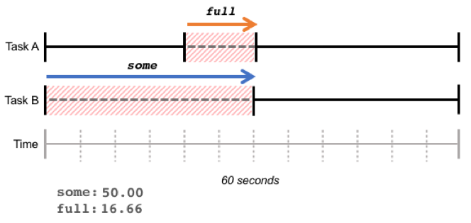
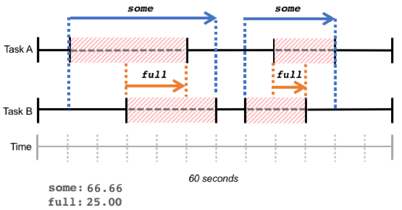
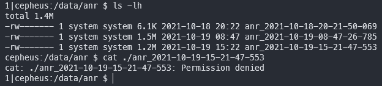
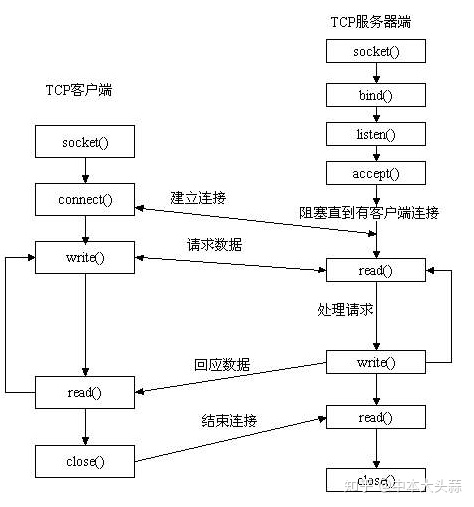
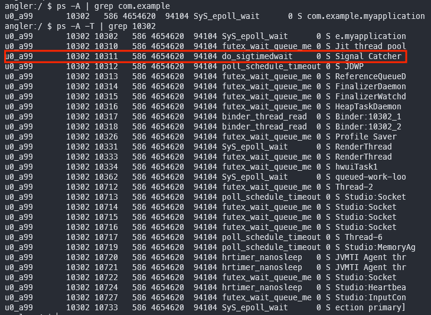

深入 ANR：产生的根源、处理流程和日志文件
overview
在 阅读源码系列：ANR 是怎么产生的 聊过不及时消费 input event 会产生 ANR：
InputReaderThread不断地从/dev/input读取 input event 并放入InputDispatcher.mInboundQueue等待分发InputDispatcher寻找 input event 对应的 window 并分发到它的待发送队列里（outboundQueue）- input event 通过 socket 发送给 app process 后转移到待消费队列（
waitQueue） - app main thread 在
Choreographer.doFrame渲染一帧时首先会响应 input event 并通过 socket 告诉InputDispatcher从待消费队列里移除 - 在执行第二步的过程中，如果发现 window 存在有未消费的 input event 则产生 ANR
产生 ANR - 输出 ANR 日志 - 弹出 ANR 对话框 整个流程的方法栈如下：
InputDispatcher::start
InputDispatcher::dispatchOnce
InputDispatcher::processAnrsLocked
InputDispatcher::onAnrLocked(const Connection& connection)
InputDispatcher::doNotifyAnrLockedInterruptible
NativeInputManager::notifyAnr
InputManagerService.notifyANR(InputApplicationHandle inputApplicationHandle, IBinder token, String reason)
InputManagerCallback.notifyANR
InputManagerCallback.notifyANRInner
ActivityManagerService.inputDispatchingTimedOut
AnrHelper.appNotResponding
AnrRecord.appNotResponding
ProcessErrorStateRecord.appNotResponding
ActivityManagerService.UiHandler.handleMessage(SHOW_NOT_RESPONDING_UI_MSG)
AppErrors.handleShowAnrUi
ProcessRecord.ErrorDialogController.showAnrDialogslogcat system
adb logcat -v threadtime > logcat
-b指定 ring buffer，默认是main,system和crash
从上面的代码可以看到 logcat system 里会输出一段 ANR 日志如下，包含以下几部分的信息（它们的次序可能会有所变化）：
ANR关键字- 发生 ANR 的 app process name 及 android component name
- app process id
- 原因/描述（看得出来这是由于没有及时消费 input event 而产生的 ANR）
- parent component (?)
Load: 0.17 / 0.44 / 0.71读取自/proc/loadavg，表示 1, 5 和 15 分钟内的系统平均负载- 内存压力统计信息（Pressure Stall Information），读取自
/proc/pressure/memory，表示任务阻塞在内存资源上的总时长 - 最近几个采集点之间的 CPU 使用率（CPU Usage）
# from mi 9
09-29 16:03:03.457 1763 29602 E ActivityManager: ANR in com.example.myapplication (com.example.myapplication/.MainActivity)
09-29 16:03:03.457 1763 29602 E ActivityManager: PID: 27750
09-29 16:03:03.457 1763 29602 E ActivityManager: Reason: Input dispatching timed out (com.example.myapplication/com.example.myapplication.MainActivity, 23ec514 com.example.myapplication/com.example.myapplication.MainActivity (server) is not responding. Waited 8008ms for MotionEvent(action=DOWN))
09-29 16:03:03.457 1763 29602 E ActivityManager: Parent: com.example.myapplication/.MainActivity
09-29 16:03:03.457 1763 29602 E ActivityManager: Load: 0.17 / 0.44 / 0.71
09-29 16:03:03.457 1763 29602 E ActivityManager: ----- Output from /proc/pressure/memory -----
09-29 16:03:03.457 1763 29602 E ActivityManager: some avg10=0.00 avg60=0.00 avg300=0.02 total=32995625
09-29 16:03:03.457 1763 29602 E ActivityManager: full avg10=0.00 avg60=0.00 avg300=0.00 total=11591183
09-29 16:03:03.457 1763 29602 E ActivityManager: ----- End output from /proc/pressure/memory -----
09-29 16:03:03.457 1763 29602 E ActivityManager:
09-29 16:03:03.457 1763 29602 E ActivityManager: CPU usage from 0ms to 14680ms later (2021-09-29 16:02:48.726 to 2021-09-29 16:03:03.406):
09-29 16:03:03.457 1763 29602 E ActivityManager: 32% 8356/com.taobao.taobao: 17% user + 15% kernel / faults: 9334 minor 85 major
09-29 16:03:03.457 1763 29602 E ActivityManager: 27% 19687/com.tencent.mm: 12% user + 15% kernel / faults: 14028 minor 129 major
09-29 16:03:03.457 1763 29602 E ActivityManager: 13% 1763/system_server: 5.8% user + 7.5% kernel / faults: 7732 minor 29 major
09-29 16:03:03.457 1763 29602 E ActivityManager: 12% 1464/media.codec: 8.5% user + 4.2% kernel / faults: 39180 minor 6 major
09-29 16:03:03.457 1763 29602 E ActivityManager: 5.1% 969/surfaceflinger: 1.1% user + 3.9% kernel / faults: 582 minor
09-29 16:03:03.457 1763 29602 E ActivityManager: 4% 26354/com.xiaomi.mi_connect_service: 2.8% user + 1.1% kernel / faults: 2438 minor
09-29 16:03:03.457 1763 29602 E ActivityManager: 0% 1569/media.swcodec: 0% user + 0% kernel / faults: 21304 minor 8 major
09-29 16:03:03.457 1763 29602 E ActivityManager: 0% 876/media.hwcodec: 0% user + 0% kernel / faults: 6726 minor 20 major
09-29 16:03:03.457 1763 29602 E ActivityManager: 2.3% 23059/kworker/u16:10: 0% user + 2.3% kernel
09-29 16:03:03.457 1763 29602 E ActivityManager: 2.3% 5410/com.sohu.inputmethod.sogou: 1.3% user + 0.9% kernel / faults: 2961 minor 53 major
09-29 16:03:03.457 1763 29602 E ActivityManager: 2% 2847/com.android.phone: 1.2% user + 0.7% kernel / faults: 2180 minor 12 major
09-29 16:03:03.457 1763 29602 E ActivityManager: 1.7% 1283/adbd: 0.5% user + 1.1% kernel / faults: 3 minor
09-29 16:03:03.457 1763 29602 E ActivityManager: 1.7% 1362/cnss_diag: 1.3% user + 0.3% kernel
09-29 16:03:03.457 1763 29602 E ActivityManager: 1.7% 22809/kworker/u16:2: 0% user + 1.7% kernel
09-29 16:03:03.457 1763 29602 E ActivityManager: 1.2% 22965/kworker/u16:7: 0% user + 1.2% kernel
09-29 16:03:03.457 1763 29602 E ActivityManager: 0% 1410/media.extractor: 0% user + 0% kernel / faults: 4053 minor 8 major
09-29 16:03:03.457 1763 29602 E ActivityManager: 1% 2239/cds_ol_rx_threa: 0% user + 1% kernel
09-29 16:03:03.457 1763 29602 E ActivityManager: 1% 21236/kworker/u16:3: 0% user + 1% kernel
09-29 16:03:03.457 1763 29602 E ActivityManager: 0.9% 22805/kworker/u16:1: 0% user + 0.9% kernel
09-29 16:03:03.457 1763 29602 E ActivityManager: 0.8% 150/kswapd0: 0% user + 0.8% kernel
09-29 16:03:03.457 1763 29602 E ActivityManager: 0.8% 582/logd: 0.4% user + 0.3% kernel / faults: 1 minor
09-29 16:03:03.457 1763 29602 E ActivityManager: 0.8% 596/android.hardware.keymaster@4.0-service-qti: 0% user + 0.8% kernel / faults: 15 minor 4 major
09-29 16:03:03.457 1763 29602 E ActivityManager: 0.8% 795/android.hardware.camera.provider@2.4-service_64: 0% user + 0.8% kernel / faults: 74 minor 29 major
09-29 16:03:03.457 1763 29602 E ActivityManager: 0.8% 835/android.hardware.sensors@1.0-service: 0.4% user + 0.3% kernel / faults: 298 minor 15 major
09-29 16:03:03.457 1763 29602 E ActivityManager: 0.8% 4647/com.android.nfc: 0.4% user + 0.3% kernel / faults: 1060 minor 4 major
09-29 16:03:03.457 1763 29602 E ActivityManager: 0.7% 26974/com.miui.player: 0.2% user + 0.5% kernel / faults: 6 minor
09-29 16:03:03.457 1763 29602 E ActivityManager: 0.6% 530/irq/303-fts: 0% user + 0.6% kernel
09-29 16:03:03.457 1763 29602 E ActivityManager: 0.6% 5337/com.miui.analytics: 0.2% user + 0.4% kernel / faults: 363 minor
09-29 16:03:03.457 1763 29602 E ActivityManager: 0.6% 23277/com.smile.gifmaker: 0.4% user + 0.2% kernel / faults: 119 minor
09-29 16:03:03.457 1763 29602 E ActivityManager: 0.5% 492/crtc_commit:131: 0% user + 0.5% kernel
09-29 16:03:03.457 1763 29602 E ActivityManager: 0.5% 693/netd: 0.1% user + 0.4% kernel / faults: 208 minor 10 major
09-29 16:03:03.457 1763 29602 E ActivityManager: 0.4% 8387/com.taobao.taobao:channel: 0.3% user + 0.1% kernel / faults: 53 minor
09-29 16:03:03.457 1763 29602 E ActivityManager: 0.4% 27750/com.example.myapplication: 0.4% user + 0% kernel / faults: 1733 minor 17 major
09-29 16:03:03.457 1763 29602 E ActivityManager: 0.4% 861/vendor.qti.hardware.perf@2.2-service: 0.1% user + 0.2% kernel / faults: 54 minor
09-29 16:03:03.457 1763 29602 E ActivityManager: 0.4% 27850/com.android.browser: 0.1% user + 0.2% kernel / faults: 117 minor
09-29 16:03:03.457 1763 29602 E ActivityManager: 0.3% 9/rcu_preempt: 0% user + 0.3% kernel
09-29 16:03:03.457 1763 29602 E ActivityManager: 0.3% 21238/kworker/u16:13: 0% user + 0.3% kernel
09-29 16:03:03.457 1763 29602 E ActivityManager: 0.3% 26155/mdnsd: 0.2% user + 0.1% kernel
09-29 16:03:03.457 1763 29602 E ActivityManager: 0.2% 10/rcu_sched: 0% user + 0.2% kernel
09-29 16:03:03.457 1763 29602 E ActivityManager: 0.2% 842/android.hardware.wifi@1.0-service: 0.1% user + 0.1% kernel
09-29 16:03:03.457 1763 29602 E ActivityManager: 0.2% 2457/com.android.systemui: 0.2% user + 0% kernel / faults: 80 minor
09-29 16:03:03.457 1763 29602 E ActivityManager: 0.2% 25386/com.tencent.mm:appbrand0: 0.2% user + 0% kernel / faults: 20 minor
09-29 16:03:03.457 1763 29602 E ActivityManager: 0.2% 26203/com.smile.gifmaker:messagesdk: 0.2% user + 0% kernel / faults: 11 minor
09-29 16:03:03.457 1763 29602 E ActivityManager: 0.2% 26730/logcat: 0% user + 0.2% kernel
09-29 16:03:03.457 1763 29602 E ActivityManager: 0.2% 1/init: 0% user + 0.1% kernel
09-29 16:03:03.457 1763 29602 E ActivityManager: 0.2% 12/rcuop/0: 0% user + 0.2% kernel
09-29 16:03:03.457 1763 29602 E ActivityManager: 0.2% 13/rcuos/0: 0% user + 0.2% kernel
09-29 16:03:03.457 1763 29602 E ActivityManager: 0.2% 584/servicemanager: 0% user + 0.1% kernel
09-29 16:03:03.457 1763 29602 E ActivityManager: 0.2% 664/jbd2/sda31-8: 0% user + 0.2% kernel
09-29 16:03:03.457 1763 29602 E ActivityManager: 0% 685/tombstoned: 0% user + 0% kernel / faults: 26 minor 52 major
09-29 16:03:03.457 1763 29602 E ActivityManager: 0.2% 958/audioserver: 0% user + 0.1% kernel / faults: 89 minor 3 major
09-29 16:03:03.457 1763 29602 E ActivityManager: 0.2% 3509/irq/33-90cd000.: 0% user + 0.2% kernel
09-29 16:03:03.457 1763 29602 E ActivityManager: 0.2% 18880/kworker/u16:4: 0% user + 0.2% kernel
09-29 16:03:03.457 1763 29602 E ActivityManager: 0.1% 22/rcuop/1: 0% user + 0.1% kernel
09-29 16:03:03.457 1763 29602 E ActivityManager: 0.1% 30/rcuop/2: 0% user + 0.1% kernel
09-29 16:03:03.457 1763 29602 E ActivityManager: 0.1% 46/rcuop/4: 0% user + 0.1% kernel
09-29 16:03:03.457 1763 29602 E ActivityManager: 0.1% 652/ipacm: 0% user + 0% kernel
09-29 16:03:03.457 1763 29602 E ActivityManager: 0.1% 653/android.system.suspend@1.0-service: 0.1% user + 0% kernel / faults: 70 minor 7 major
09-29 16:03:03.457 1763 29602 E ActivityManager: 0.1% 692/statsd: 0% user + 0.1% kernel / faults: 73 minor 2 major
09-29 16:03:03.457 1763 29602 E ActivityManager: 0% 794/android.hardware.bluetooth@1.0-service-qti: 0% user + 0% kernel / faults: 15 minor 13 major
09-29 16:03:03.457 1763 29602 E ActivityManager: 0% 815/android.hardware.gnss@2.1-service-qti: 0% user + 0% kernel / faults: 97 minor 17 major
09-29 16:03:03.457 1763 29602 E ActivityManager: 0.1% 821/android.hardware.health@2.1-service: 0% user + 0.1% kernel / faults: 33 minor 4 major
09-29 16:03:03.457 1763 29602 E ActivityManager: 0% 833/android.hardware.neuralnetworks@1.3-service-qti: 0% user + 0% kernel / faults: 108 minor 34 major
09-29 16:03:03.457 1763 29602 E ActivityManager: 0.1% 862/qrtr_rx: 0% user + 0.1% kernel
09-29 16:03:03.457 1763 29602 E ActivityManager: 0.1% 1093/mi_thermald: 0% user + 0.1% kernel
09-29 16:03:03.457 1763 29602 E ActivityManager: 0% 1371/cameraserver: 0% user + 0% kernel / faults: 46 minor
09-29 16:03:03.457 1763 29602 E ActivityManager: 0.1% 1388/keystore: 0% user + 0.1% kernel / faults: 252 minor
09-29 16:03:03.457 1763 29602 E ActivityManager: 0% 1436/mediaserver: 0% user + 0% kernel / faults: 42 minor
09-29 16:03:03.457 1763 29602 E ActivityManager: 0.1% 1651/msm_irqbalance: 0% user + 0.1% kernel
09-29 16:03:03.457 1763 29602 E ActivityManager: 0.1% 3449/com.google.android.gms.persistent: 0.1% user + 0% kernel
09-29 16:03:03.457 1763 29602 E ActivityManager: 0.1% 3507/irq/32-90b6400.: 0% user + 0.1% kernel
09-29 16:03:03.457 1763 29602 E ActivityManager: 0.1% 4583/tcpdump: 0% user + 0% kernel
09-29 16:03:03.457 1763 29602 E ActivityManager: 0.1% 4834/com.xiaomi.mircs: 0% user + 0.1% kernel
09-29 16:03:03.457 1763 29602 E ActivityManager: 0.1% 5105/com.tencent.wework: 0% user + 0% kernel / faults: 5 minor
09-29 16:03:03.457 1763 29602 E ActivityManager: 0.1% 25408/com.tencent.mm:appbrand1: 0.1% user + 0% kernel / faults: 15 minor
09-29 16:03:03.457 1763 29602 E ActivityManager: 0.1% 29363/kworker/0:2: 0% user + 0.1% kernel
09-29 16:03:03.457 1763 29602 E ActivityManager: 0% 8/ksoftirqd/0: 0% user + 0% kernel
09-29 16:03:03.457 1763 29602 E ActivityManager: 0% 15/migration/0: 0% user + 0% kernel
09-29 16:03:03.457 1763 29602 E ActivityManager: 0% 31/rcuos/2: 0% user + 0% kernel
09-29 16:03:03.457 1763 29602 E ActivityManager: 0% 38/rcuop/3: 0% user + 0% kernel
09-29 16:03:03.457 1763 29602 E ActivityManager: 0% 39/rcuos/3: 0% user + 0% kernel
09-29 16:03:03.457 1763 29602 E ActivityManager: 0% 54/rcuop/5: 0% user + 0% kernel
09-29 16:03:03.457 1763 29602 E ActivityManager: 0% 70/rcuop/7: 0% user + 0% kernel
09-29 16:03:03.457 1763 29602 E ActivityManager: 0% 278/qseecom-unload-: 0% user + 0% kernel
09-29 16:03:03.457 1763 29602 E ActivityManager: 0% 370/irq/573-dma-gra: 0% user + 0% kernel
09-29 16:03:03.457 1763 29602 E ActivityManager: 0% 542/kworker/2:1H: 0% user + 0% kernel
09-29 16:03:03.457 1763 29602 E ActivityManager: 0% 556/ueventd: 0% user + 0% kernel
09-29 16:03:03.457 1763 29602 E ActivityManager: 0% 585/hwservicemanager: 0% user + 0% kernel / faults: 56 minor 8 major
09-29 16:03:03.457 1763 29602 E ActivityManager: 0% 626/vold: 0% user + 0% kernel / faults: 54 minor 1 major
09-29 16:03:03.457 1763 29602 E ActivityManager: 0% 740/kworker/3:1H: 0% user + 0% kernel
09-29 16:03:03.457 1763 29602 E ActivityManager: 0% 783/android.hardware.audio.service: 0% user + 0% kernel / faults: 65 minor 8 major
09-29 16:03:03.457 1763 29602 E ActivityManager: 0% 818/android.hardware.graphics.composer@2.4-service: 0% user + 0% kernel / faults: 215 minor 1 major
09-29 16:03:03.457 1763 29602 E ActivityManager: 0% 1095/batteryd: 0% user + 0% kernel
09-29 16:03:03.457 1763 29602 E ActivityManager: 0% 1272/wlan_logging_th: 0% user + 0% kernel
09-29 16:03:03.457 1763 29602 E ActivityManager: 0% 1433/media.metrics: 0% user + 0% kernel / faults: 35 minor
09-29 16:03:03.457 1763 29602 E ActivityManager: 0% 1457/wificond: 0% user + 0% kernel
09-29 16:03:03.457 1763 29602 E ActivityManager: 0% 1480/ipacm-diag: 0% user + 0% kernel
09-29 16:03:03.457 1763 29602 E ActivityManager: 0% 1574/cnss-daemon: 0% user + 0% kernel
09-29 16:03:03.457 1763 29602 E ActivityManager: 0% 1617/android.hardware.biometrics.fingerprint@2.1-service: 0% user + 0% kernel / faults: 24 minor 3 major
09-29 16:03:03.457 1763 29602 E ActivityManager: 0% 1632/qcrild: 0% user + 0% kernel / faults: 3 minor
09-29 16:03:03.457 1763 29602 E ActivityManager: 0% 1644/hvdcp_opti: 0% user + 0% kernel
09-29 16:03:03.457 1763 29602 E ActivityManager: 0% 1665/qcrild: 0% user + 0% kernel / faults: 3 minor
09-29 16:03:03.457 1763 29602 E ActivityManager: 0% 1853/psimon: 0% user + 0% kernel
09-29 16:03:03.457 1763 29602 E ActivityManager: 0% 5514/com.miui.securitycenter.remote: 0% user + 0% kernel / faults: 21 minor
09-29 16:03:03.457 1763 29602 E ActivityManager: 0% 8782/com.miui.powerkeeper: 0% user + 0% kernel / faults: 23 minor
09-29 16:03:03.457 1763 29602 E ActivityManager: 0% 8829/com.taobao.taobao:sandboxed_privilege_process0: 0% user + 0% kernel / faults: 3 minor
09-29 16:03:03.457 1763 29602 E ActivityManager: 0% 8985/com.taobao.taobao:remote: 0% user + 0% kernel / faults: 1 minor
09-29 16:03:03.457 1763 29602 E ActivityManager: 0% 9034/cn.ticktick.task: 0% user + 0% kernel / faults: 1 minor
09-29 16:03:03.457 1763 29602 E ActivityManager: 0% 13678/com.tencent.mm:toolsmp: 0% user + 0% kernel / faults: 17 minor
09-29 16:03:03.457 1763 29602 E ActivityManager: 0% 13906/tv.danmaku.bili:download: 0% user + 0% kernel / faults: 2 minor
09-29 16:03:03.457 1763 29602 E ActivityManager: 0% 14396/iptables-restore: 0% user + 0% kernel / faults: 10 minor
09-29 16:03:03.457 1763 29602 E ActivityManager: 0% 14408/ip6tables-restore: 0% user + 0% kernel / faults: 1 minor
09-29 16:03:03.457 1763 29602 E ActivityManager: 0% 26888/com.miui.player:remote: 0% user + 0% kernel
09-29 16:03:03.457 1763 29602 E ActivityManager: 0% 28950/kworker/1:0: 0% user + 0% kernel
09-29 16:03:03.457 1763 29602 E ActivityManager: 0% 29260/com.miui.aod:settings: 0% user + 0% kernel
09-29 16:03:03.457 1763 29602 E ActivityManager: 0% 29378/kworker/3:3: 0% user + 0% kernel
09-29 16:03:03.457 1763 29602 E ActivityManager: 0% 29558/logcat: 0% user + 0% kernel
09-29 16:03:03.457 1763 29602 E ActivityManager: 0% 29564/kworker/2:0: 0% user + 0% kernel
09-29 16:03:03.457 1763 29602 E ActivityManager: 19% TOTAL: 8% user + 9.2% kernel + 0.6% iowait + 0.9% irq + 0.4% softirq
09-29 16:03:03.457 1763 29602 E ActivityManager: CPU usage from 57ms to 615ms later (2021-09-29 16:02:48.783 to 2021-09-29 16:02:49.341):
09-29 16:03:03.457 1763 29602 E ActivityManager: 75% 1763/system_server: 27% user + 47% kernel / faults: 1442 minor
09-29 16:03:03.457 1763 29602 E ActivityManager: 54% 29602/AnrConsumer: 15% user + 38% kernel
09-29 16:03:03.457 1763 29602 E ActivityManager: 15% 1772/HeapTaskDaemon: 13% user + 2.2% kernel
09-29 16:03:03.457 1763 29602 E ActivityManager: 2.2% 1781/android.ui: 0% user + 2.2% kernel
09-29 16:03:03.457 1763 29602 E ActivityManager: 2.2% 3385/Binder:1763_F: 0% user + 2.2% kernel
09-29 16:03:03.457 1763 29602 E ActivityManager: 4% 835/android.hardware.sensors@1.0-service: 2% user + 2% kernel
09-29 16:03:03.457 1763 29602 E ActivityManager: 4.2% 969/surfaceflinger: 0% user + 4.2% kernel
09-29 16:03:03.457 1763 29602 E ActivityManager: 2.1% 1040/Binder:969_1: 0% user + 2.1% kernel
09-29 16:03:03.457 1763 29602 E ActivityManager: 2.1% 1214/app: 0% user + 2.1% kernel
09-29 16:03:03.457 1763 29602 E ActivityManager: 4.2% 1362/cnss_diag: 4.2% user + 0% kernel
09-29 16:03:03.457 1763 29602 E ActivityManager: 5.7% 8356/com.taobao.taobao: 2.8% user + 2.8% kernel / faults: 7 minor
09-29 16:03:03.457 1763 29602 E ActivityManager: 2.8% 8356/m.taobao.taobao: 0% user + 2.8% kernel
09-29 16:03:03.457 1763 29602 E ActivityManager: 1.8% 46/rcuop/4: 0% user + 1.8% kernel
09-29 16:03:03.457 1763 29602 E ActivityManager: 1.8% 70/rcuop/7: 0% user + 1.8% kernel
09-29 16:03:03.457 1763 29602 E ActivityManager: 1.9% 492/crtc_commit:131: 0% user + 1.9% kernel
09-29 16:03:03.457 1763 29602 E ActivityManager: 1.9% 542/kworker/2:1H: 0% user + 1.9% kernel
09-29 16:03:03.457 1763 29602 E ActivityManager: 1.9% 584/servicemanager: 0% user + 1.9% kernel
09-29 16:03:03.457 1763 29602 E ActivityManager: 2.1% 1093/mi_thermald: 0% user + 2.1% kernel
09-29 16:03:03.457 1763 29602 E ActivityManager: 2.2% 1665/qcrild: 0% user + 2.2% kernel / faults: 1 minor
09-29 16:03:03.457 1763 29602 E ActivityManager: 2.3% 2239/cds_ol_rx_threa: 0% user + 2.3% kernel
09-29 16:03:03.457 1763 29602 E ActivityManager: 2.3% 2847/com.android.phone: 2.3% user + 0% kernel / faults: 19 minor
09-29 16:03:03.457 1763 29602 E ActivityManager: 2.3% 2847/m.android.phone: 2.3% user + 0% kernel
09-29 16:03:03.457 1763 29602 E ActivityManager: 2.3% 3437/Binder:2847_A: 2.3% user + 0% kernel
09-29 16:03:03.457 1763 29602 E ActivityManager: 2.4% 3509/irq/33-90cd000.: 0% user + 2.4% kernel
09-29 16:03:03.457 1763 29602 E ActivityManager: 3.2% 19687/com.tencent.mm: 0% user + 3.2% kernel
09-29 16:03:03.457 1763 29602 E ActivityManager: 3.3% 22965/kworker/u16:7: 0% user + 3.3% kernel
09-29 16:03:03.457 1763 29602 E ActivityManager: 3.5% 26155/mdnsd: 0% user + 3.5% kernel
09-29 16:03:03.457 1763 29602 E ActivityManager: 15% TOTAL: 6.1% user + 7.5% kernel + 0.9% irq + 0.4% softirq上面的日志是在 ProcessErrorStateRecord.appNotResponding 输出的，info 是输出至 logcat system 的日志
class ProcessErrorStateRecord {
void appNotResponding(String activityShortComponentName, ApplicationInfo aInfo,
String parentShortComponentName, WindowProcessController parentProcess,
boolean aboveSystem, String annotation, boolean onlyDumpSelf) {
// ...
// Log the ANR to the main log.
StringBuilder info = new StringBuilder();
info.setLength(0);
info.append("ANR in ").append(mApp.processName);
if (activityShortComponentName != null) {
info.append(" (").append(activityShortComponentName).append(")");
}
info.append("\n");
info.append("PID: ").append(pid).append("\n");
if (annotation != null) {
info.append("Reason: ").append(annotation).append("\n");
}
if (parentShortComponentName != null
&& parentShortComponentName.equals(activityShortComponentName)) {
info.append("Parent: ").append(parentShortComponentName).append("\n");
}
if (errorId != null) {
info.append("ErrorId: ").append(errorId.toString()).append("\n");
}
info.append("Frozen: ").append(mApp.mOptRecord.isFrozen()).append("\n");
// ...
StringBuilder report = new StringBuilder();
report.append(MemoryPressureUtil.currentPsiState());
ProcessCpuTracker processCpuTracker = new ProcessCpuTracker(true);
// don't dump native PIDs for background ANRs unless it is the process of interest
// ...
// For background ANRs, don't pass the ProcessCpuTracker to
// avoid spending 1/2 second collecting stats to rank lastPids.
StringWriter tracesFileException = new StringWriter();
// To hold the start and end offset to the ANR trace file respectively.
final long[] offsets = new long[2];
File tracesFile = ActivityManagerService.dumpStackTraces(firstPids,
isSilentAnr ? null : processCpuTracker, isSilentAnr ? null : lastPids,
nativePids, tracesFileException, offsets, annotation);
if (isMonitorCpuUsage()) {
mService.updateCpuStatsNow();
mService.mAppProfiler.printCurrentCpuState(report, anrTime);
info.append(processCpuTracker.printCurrentLoad());
info.append(report);
}
report.append(tracesFileException.getBuffer());
info.append(processCpuTracker.printCurrentState(anrTime));
Slog.e(TAG, info.toString());
// ...
}
}load average
用进程数来描述 CPU 负载压力
class ProcessErrorStateRecord {
void appNotResponding(...) {
// ...
if (isMonitorCpuUsage()) {
mService.updateCpuStatsNow();
synchronized (mService.mProcessCpuTracker) {
report.append(mService.mProcessCpuTracker.printCurrentState(anrTime));
}
info.append(processCpuTracker.printCurrentLoad()); // 这里输出系统平均负载
info.append(report);
}
// ...
}
}
class ProcessCpuTracker {
// 三个值分别对应 mLoad1, mLoad5 和 mLoad15
final public String printCurrentLoad() {
StringWriter sw = new StringWriter();
PrintWriter pw = new FastPrintWriter(sw, false, 128);
pw.print("Load: ");
pw.print(mLoad1);
pw.print(" / ");
pw.print(mLoad5);
pw.print(" / ");
pw.println(mLoad15);
pw.flush();
return sw.toString();
}
// 这三个变量来自 /proc/loadavg
public void update() {
// ...
final float[] loadAverages = mLoadAverageData;
if (Process.readProcFile("/proc/loadavg", LOAD_AVERAGE_FORMAT,
null, null, loadAverages)) {
float load1 = loadAverages[0];
float load5 = loadAverages[1];
float load15 = loadAverages[2];
if (load1 != mLoad1 || load5 != mLoad5 || load15 != mLoad15) {
mLoad1 = load1;
mLoad5 = load5;
mLoad15 = load15;
onLoadChanged(load1, load5, load15);
}
}
// ...
}
}man proc.5
/proc/loadavg
The first three fields in this file are load average figures giving the number of jobs in the run queue (state R) or waiting for disk I/O (state D) averaged over 1, 5, and 15 minutes. They are the same as the load average numbers given by uptime(1) and other programs.
The fourth field consists of two numbers separated by a slash (/). The first of these is the number of currently runnable kernel scheduling entities (processes, threads). The value after the slash is the number of kernel scheduling entities that currently exist on the system.
The fifth field is the PID of the process that was most recently created on the system.
在绿联 6812（4 x A53@1.5G）上获取的值是 13.31 13.74 13.81 2/1167 3888
- 在过去的 1, 5, 15 分钟内 CPU 的平均负载是 13.31, 13.74, 13.81
- 当前有 1167 个进程，其中有 2 个正在运行
- 最近创建的一个进程是 3888
在 Linux 系统中，uptime、w、top 等命令都会有系统平均负载 load average 的输出，系统平均负载被定义为在特定时间间隔内运行队列中的平均进程数
如果一个进程满足以下条件则其就会位于运行队列中：它没有在等待 I/O 操作的结果，它没有主动进入等待状态(也就是没有调用’wait’)，没有被停止(例如：等待终止)
例如：
[root@opendigest root]# uptime
7:51pm up 2 days, 5:43, 2 users, load average: 8.13, 5.90, 4.94
命令输出的最后内容表示在过去的 1、5、15 分钟内运行队列中的平均进程数量一般来说只要每个 CPU 的当前活动进程数不大于 3 那么系统的性能就是良好的，如果每个 CPU 的任务数大于 5 那么就表示这台机器的性能有严重问题。对于上面的例子来说，假设系统有两个 CPU 那么其每个 CPU 的当前任务数为：8.13 / 2 = 4.065，这表示该系统的性能是可以接受的
这么看来 13.81 / 4 = 3.45 这块绿联屏的性能还是可以接受的
PSI (Pressure Stall Information)
Pressure Stall Information 提供了一种评估系统资源压力的方法。系统有三个基础资源：CPU、Memory 和 IO，无论这些资源配置如何增加，似乎永远无法满足软件的需求。一旦产生资源竞争，就有可能带来延迟增大，使用户体验到卡顿
如果没有一种相对准确的方法检测系统的资源压力程度，有两种后果：一种是资源使用者过度克制，没有充分使用系统资源；另一种是经常产生资源竞争，过度使用资源导致等待延迟过大。准确的检测方法可以帮忙资源使用者确定合适的工作量，同时也可以帮助系统制定高效的资源调度策略，最大化利用系统资源，最大化改善用户体验
Facebook 在 2018 年开源了一套解决重要计算集群管理问题的 Linux 内核组件和相关工具，PSI 是其中重要的资源度量工具，它提供了一种实时检测系统资源竞争程度的方法，以竞争等待时间的方式呈现，简单而准确地供用户以及资源调度者进行决策
在此之前，Linux 也有一些资源压力的评估方法，最具代表性的是 load average 和 vmpressure
每类资源的压力信息都通过 proc 文件系统的独立文件来提供，路径为：/proc/pressure/memory，/proc/pressure/cpu 和 /proc/pressure/io，其中 /proc/pressure/io 输出格式如下：
some avg10=0.30 avg60=0.12 avg300=0.02 total=4170757
full avg10=0.12 avg60=0.05 avg300=0.01 total=1856503- avg10、avg60、avg300 分别代表 10s、60s、300s 的时间周期内的阻塞时间百分比
- total 是总累计时间，以毫秒为单位
- some 这一行，代表至少有一个任务在某个资源上阻塞的时间占比
- full 这一行，代表所有的非 idle 任务同时被阻塞的时间占比，这期间 cpu 被完全浪费，会带来严重的性能问题
我们以 IO 的 some 和 full 来举例说明，假设在 60 秒的时间段内，系统有两个 task，在 60 秒的周期内的运行情况如下图所示：

红色阴影部分表示任务由于等待 IO 资源而进入阻塞状态。Task A 和 Task B 同时阻塞的部分为 full，占比 16.66%；至少有一个任务阻塞（仅 Task B 阻塞的部分也计算入内）的部分为 some，占比 50%
some 和 full 都是在某一时间段内阻塞时间占比的总和，阻塞时间不一定连续，如下图所示：

IO 和 memory 都有 some 和 full 两个维度，那是因为的确有可能系统中的所有任务都阻塞在 IO 或者 memory 资源，同时 CPU 进入 idle 状态
但是 CPU 资源不可能出现这个情况：不可能全部的 runnable 的任务都等待 CPU 资源，至少有一个 runnable 任务会被调度器选中占有 CPU 资源，因此 CPU 资源没有 full 维度的 PSI 信息呈现
通过这些阻塞占比数据，我们可以看到短期以及中长期一段时间内各种资源的压力情况，可以较精确的确定时延抖动原因，并制定对应的负载管理策略
09-29 16:03:03.457 1763 29602 E ActivityManager: ----- Output from /proc/pressure/memory -----
09-29 16:03:03.457 1763 29602 E ActivityManager: some avg10=0.00 avg60=0.00 avg300=0.02 total=32995625
09-29 16:03:03.457 1763 29602 E ActivityManager: full avg10=0.00 avg60=0.00 avg300=0.00 total=11591183
09-29 16:03:03.457 1763 29602 E ActivityManager: ----- End output from /proc/pressure/memory -----现在我们来看看 anr logcat 里输出的 /proc/pressure/memory 内容，full 都为零说明任务同时阻塞在内存资源上的情况没有出现，some - avg300=0.02 表明在有任务阻塞在内存资源上 6s（300s * 0.02，注意这 6s 是总和，不一定是连续的）
public final class MemoryPressureUtil {
private static final String FILE = "/proc/pressure/memory";
private static final String TAG = "MemoryPressure";
/**
* @return a stanza about memory PSI to add to a report.
*/
public static String currentPsiState() {
final StrictMode.ThreadPolicy savedPolicy = StrictMode.allowThreadDiskReads();
StringWriter contents = new StringWriter();
try {
if (new File(FILE).exists()) {
contents.append("----- Output from /proc/pressure/memory -----\n");
contents.append(IoUtils.readFileAsString(FILE));
contents.append("----- End output from /proc/pressure/memory -----\n\n");
}
} catch (IOException e) {
Slog.e(TAG, "Could not read " + FILE, e);
} finally {
StrictMode.setThreadPolicy(savedPolicy);
}
return contents.toString();
}
private MemoryPressureUtil(){}
}CPU usage
ProcessCpuTracker 顾名思义是用来跟踪进程 CPU 使用率的，它的数据是在 ProcessCpuTracker.update() 里采集的（/proc/stat, /proc/[pid]/stat），mCurrentSampleTime 是上一次执行 ProcessCpuTracker.update() 的时间（既是数据快照的时间，也是两次数据快照差值的结束时间），而 mLastSampleTime 是上上次执行 ProcessCpuTracker.update() 的时间（也是两次数据快照差值的开始时间），now 是发生 ANR 的时间，它们的关系有：
- 如果是
anr - mLastSampleTime - mCurrentSampleTime，说明 ANR 发生在两次快照差值（统计时间段）之前，对应的是later - 如果是
mLastSampleTime - mCurrentSampleTime - anr，说明 ANR 发生在两次快照差值（统计时间段）之后，对应的是ago
// 第一段 CPU Usage 是由 mService.mAppProfiler.printCurrentCpuState(report, anrTime) 打印出来的
09-29 16:03:03.457 1763 29602 E ActivityManager: CPU usage from 0ms to 14680ms later (2021-09-29 16:02:48.726 to 2021-09-29 16:03:03.406):
...
// 第二段 CPU Usage 是由 info.append(processCpuTracker.printCurrentState(anrTime)) 打印出来的
09-29 16:03:03.457 1763 29602 E ActivityManager: CPU usage from 57ms to 615ms later (2021-09-29 16:02:48.783 to 2021-09-29 16:02:49.341):
...class ProcessErrorStateRecord {
void appNotResponding(String activityShortComponentName, ApplicationInfo aInfo,
String parentShortComponentName, WindowProcessController parentProcess,
boolean aboveSystem, String annotation, boolean onlyDumpSelf) {
// ...
StringBuilder report = new StringBuilder();
report.append(MemoryPressureUtil.currentPsiState());
// ...
if (isMonitorCpuUsage()) {
mService.updateCpuStatsNow();
mService.mAppProfiler.printCurrentCpuState(report, anrTime);
info.append(processCpuTracker.printCurrentLoad());
info.append(report);
}
report.append(tracesFileException.getBuffer());
info.append(processCpuTracker.printCurrentState(anrTime));
Slog.e(TAG, info.toString()); // info 是输出至 logcat system 的日志文本
// ...
}
}
class AppProfiler {
void printCurrentCpuState(StringBuilder report, long time) {
synchronized (mProcessCpuTracker) {
report.append(mProcessCpuTracker.printCurrentState(time));
}
}
}
class ProcessCpuTracker {
final public String printCurrentState(long now) {
final SimpleDateFormat sdf = new SimpleDateFormat("yyyy-MM-dd HH:mm:ss.SSS");
buildWorkingProcs();
StringWriter sw = new StringWriter();
PrintWriter pw = new FastPrintWriter(sw, false, 1024);
pw.print("CPU usage from ");
if (now > mLastSampleTime) {
pw.print(now-mLastSampleTime);
pw.print("ms to ");
pw.print(now-mCurrentSampleTime);
pw.print("ms ago");
} else {
pw.print(mLastSampleTime-now);
pw.print("ms to ");
pw.print(mCurrentSampleTime-now);
pw.print("ms later");
}
pw.print(" (");
pw.print(sdf.format(new Date(mLastSampleWallTime)));
pw.print(" to ");
pw.print(sdf.format(new Date(mCurrentSampleWallTime)));
pw.print(")");
long sampleTime = mCurrentSampleTime - mLastSampleTime;
long sampleRealTime = mCurrentSampleRealTime - mLastSampleRealTime;
long percAwake = sampleRealTime > 0 ? ((sampleTime*100) / sampleRealTime) : 0;
if (percAwake != 100) {
pw.print(" with ");
pw.print(percAwake);
pw.print("% awake");
}
pw.println(":");
// ...
}
}收集进程 /proc/[pid]
Process.getPids(dir, array) 遍历目录 dir （这里传入的是 /proc）下的条目，找到纯数字的条目（即为 pid）加入到 array（pid array），array 会复用，只有当 pid 的数量超过 array 容量时才分配新的数组
// Process.getPids(dir, array)
// 从 /proc 获取 pid 列表到 array
jintArray android_os_Process_getPids(JNIEnv* env, jobject clazz,
jstring file /* /proc */, jintArray lastArray)
{
if (file == NULL) {
jniThrowNullPointerException(env, NULL);
return NULL;
}
const char* file8 = env->GetStringUTFChars(file, NULL);
if (file8 == NULL) {
jniThrowException(env, "java/lang/OutOfMemoryError", NULL);
return NULL;
}
DIR* dirp = opendir(file8);
env->ReleaseStringUTFChars(file, file8);
if(dirp == NULL) {
return NULL;
}
jsize curCount = 0;
jint* curData = NULL;
if (lastArray != NULL) {
curCount = env->GetArrayLength(lastArray);
curData = env->GetIntArrayElements(lastArray, 0);
}
jint curPos = 0;
struct dirent* entry;
while ((entry=readdir(dirp)) != NULL) {
const char* p = entry->d_name;
while (*p) {
if (*p < '0' || *p > '9') break;
p++;
}
if (*p != 0) continue;
char* end;
int pid = strtol(entry->d_name, &end, 10);
//ALOGI("File %s pid=%d\n", entry->d_name, pid);
if (curPos >= curCount) {
jsize newCount = (curCount == 0) ? 10 : (curCount*2);
jintArray newArray = env->NewIntArray(newCount);
if (newArray == NULL) {
closedir(dirp);
jniThrowException(env, "java/lang/OutOfMemoryError", NULL);
return NULL;
}
jint* newData = env->GetIntArrayElements(newArray, 0);
if (curData != NULL) {
memcpy(newData, curData, sizeof(jint)*curCount);
env->ReleaseIntArrayElements(lastArray, curData, 0);
}
lastArray = newArray;
curCount = newCount;
curData = newData;
}
curData[curPos] = pid;
curPos++;
}
closedir(dirp);
if (curData != NULL && curPos > 0) {
qsort(curData, curPos, sizeof(jint), pid_compare);
}
while (curPos < curCount) {
curData[curPos] = -1;
curPos++;
}
if (curData != NULL) {
env->ReleaseIntArrayElements(lastArray, curData, 0);
}
return lastArray;
}进程概览 /proc/[pid]/stat
在 MI 9 上通过 cat /proc/8538/stat 打印出的内容如下（8538 是通过 ps -A | grep com.tencent.mm 查找出的微信的 pid）：
cepheus:/proc $ cat /proc/8538/stat
8538 (com.tencent.mm) S 690 690 0 0 -1 1077952832 2355958 1597 22562 6 39676 24386 2 1 20 0 209 0 464604 73654394880 26729 18446744073709551615 1 1 0 0 0 0 4608 4097 1073775868 0 0 0 17 0 0 0 2401 0 0 0 0 0 0 0 0 0 0一些重要字段的含义如下（来自 man proc.5 里的 /proc/[pid]/stat 章节）：
| index | name | value | desc |
|---|---|---|---|
| 0 | pid | 8538 | pid |
| 1 | comm | (com.tencent.mm) | command, The filename of the executable, 这里是包名 |
| 2 | state | S | process state，进程状态：R - Running, S - Sleeping(interruptible), D - Waiting(uninterruptible), Z - Zombie … |
| 3 | ppid | 690 | 父进程的 PID |
| 4 | pgrp | 690 | group ID |
| 5 | 0 | ||
| 6 | 0 | ||
| 7 | -1 | ||
| 8 | 1077952832 | ||
| 9 | minflt | 2355958 | minor page faults (which have not required loading a memory page from disk), 加载 CPU 指令时发生缺页错误，但指令以及加载至物理内存，只需将虚存映射到物理内存即可 |
| 10 | cminflt | 1597 | |
| 11 | majflt | 22562 | major page faults (which have required loading a memory page from disk), 同样是加载 CPU 指令时发生缺页错误，但此时需要从磁盘读取指令，比上面的情况要严重 |
| 12 | cmajflt | 6 | |
| 13 | utime | 39676 | Amount of time that this process has been scheduled in user mode, 进程运行在用户态的 CPU 时间 |
| 14 | stime | 24386 | Amount of time that this process has been scheduled in kernel mode, 进程运行在内核态的 CPU 时间 |
| 15 | cutime | 2 | |
| 16 | cstime | 1 | |
| 17 | priority | 20 | 优先级（在创建进程的时候就设置好后续不能更改） |
| 18 | nice | 0 | 进程最终优先级 = priorty + nice，nice 值可以在运行时动态修改 |
| 19 | num_threads | 209 | |
| 20 | 0 | ||
| 21 | starttime | 464604 | The time the process started after system boot, 进程的运行时间（是一个从系统启动时间开始算起的相对值） |
| 22 | vsize | 73654394880 | Virtual memory size in bytes |
Linux 对于物理内存的管理方法
由 MMU 把物理内存分割成众多个 page，每个 page 是 4KB. 然后把 page 映射到进程的虚拟内存空间，CPU 在执行进程中的指令时以虚拟内存地址为基础，通过 map 映射进而找到物理内存中实际存放指令的地址
缺页错误 (page fault)
严格说这里指的是 major page fault，名字听起来挺严重，实际上并不是什么”错误”
大致是这样，一个程序可能占几 MB，但并不是所有的指令都要同时运行，有些是在初始化时运行，有些是在特定条件下才会去运行。因此 linux 并不会把所有的指令都从磁盘加载到物理内存，那么当 cpu 在执行指令时如果发现下一条要执行的指令不在物理内存时，就会 raise a page fault 通知 MMU 把下面要执行的指令从磁盘加载到物理内存中
还有另一种就是 minor fault
minor page fault 指的是要执行的指令实际上已经在物理内存，只是这个 page 没有映射到当前进程的虚拟内存，这时就会 raise a minor page fault 让 MMU 把这个 page 映射进当前进程的虚拟内存，因此 minor page fault 并不需要去访问磁盘
What a Swap?
当物理内存不够时，把一些物理内存 page 写入到磁盘以腾出一些空闲的 page 出来供进程使用，这就是 swap out；反过来说当 CPU 要执行的指令被发现已经 swap out 到了磁盘中，这时就需要从磁盘把这些指令再 swap in 到物理内存中让CPU去执行
swap in 和 swap out 的操作都是比较耗时的, 频繁的 swap in 和 swap out 操作很影响系统性能
ProcessCpuTracker.update 和 ProcessCpuTracker.collectStats 读取并解析 /proc/[pid]/stat 文件内容为 Stats 结构，保存在 ProcessCpuTracker.mProcStats 以供后续打印，它的重要字段有：
| field | desc |
|---|---|
| pid | 进程 ID，来自 /proc 目录下的纯数字目录 |
| name | 进程名，来自 /proc/[pid]/stat#comm |
| base_uptime | 取自 SystemClock.uptimeMillis() |
| base_utime | 运行在用户态的 CPU 时间 |
| base_stime | 运行在核心态的 CPU 时间 |
| base_majfaults | major page faults |
| base_minfaults | minor page faults |
| rel_uptime | |
| rel_utime | |
| rel_stime | |
| rel_majfaults | |
| rel_minfaults |
第一次遇到进程时（构造 State）将初始值填入 base_xxx，下次遇到进程时给 rel_xxx 赋值：rel_xxx = [now] - base_xxx 并更新 base_xxx 为当前值 [now]，也就是说 base_xxx 是当前快照而 rel_xxx 是当前与上一次快照的差值
class ProcessCpuTracker {
public void update() {
if (DEBUG) Slog.v(TAG, "Update: " + this);
final long nowUptime = SystemClock.uptimeMillis();
final long nowRealtime = SystemClock.elapsedRealtime();
final long nowWallTime = System.currentTimeMillis();
final long[] sysCpu = mSystemCpuData;
if (Process.readProcFile("/proc/stat", SYSTEM_CPU_FORMAT,
null, sysCpu, null)) {
// Total user time is user + nice time.
final long usertime = (sysCpu[0]+sysCpu[1]) * mJiffyMillis;
// Total system time is simply system time.
final long systemtime = sysCpu[2] * mJiffyMillis;
// Total idle time is simply idle time.
final long idletime = sysCpu[3] * mJiffyMillis;
// Total irq time is iowait + irq + softirq time.
final long iowaittime = sysCpu[4] * mJiffyMillis;
final long irqtime = sysCpu[5] * mJiffyMillis;
final long softirqtime = sysCpu[6] * mJiffyMillis;
// This code is trying to avoid issues with idle time going backwards,
// but currently it gets into situations where it triggers most of the time. :(
if (true || (usertime >= mBaseUserTime && systemtime >= mBaseSystemTime
&& iowaittime >= mBaseIoWaitTime && irqtime >= mBaseIrqTime
&& softirqtime >= mBaseSoftIrqTime && idletime >= mBaseIdleTime)) {
mRelUserTime = (int)(usertime - mBaseUserTime);
mRelSystemTime = (int)(systemtime - mBaseSystemTime);
mRelIoWaitTime = (int)(iowaittime - mBaseIoWaitTime);
mRelIrqTime = (int)(irqtime - mBaseIrqTime);
mRelSoftIrqTime = (int)(softirqtime - mBaseSoftIrqTime);
mRelIdleTime = (int)(idletime - mBaseIdleTime);
mRelStatsAreGood = true;
if (DEBUG) {
Slog.i("Load", "Total U:" + (sysCpu[0]*mJiffyMillis)
+ " N:" + (sysCpu[1]*mJiffyMillis)
+ " S:" + (sysCpu[2]*mJiffyMillis) + " I:" + (sysCpu[3]*mJiffyMillis)
+ " W:" + (sysCpu[4]*mJiffyMillis) + " Q:" + (sysCpu[5]*mJiffyMillis)
+ " O:" + (sysCpu[6]*mJiffyMillis));
Slog.i("Load", "Rel U:" + mRelUserTime + " S:" + mRelSystemTime
+ " I:" + mRelIdleTime + " Q:" + mRelIrqTime);
}
mBaseUserTime = usertime;
mBaseSystemTime = systemtime;
mBaseIoWaitTime = iowaittime;
mBaseIrqTime = irqtime;
mBaseSoftIrqTime = softirqtime;
mBaseIdleTime = idletime;
} else {
mRelUserTime = 0;
mRelSystemTime = 0;
mRelIoWaitTime = 0;
mRelIrqTime = 0;
mRelSoftIrqTime = 0;
mRelIdleTime = 0;
mRelStatsAreGood = false;
Slog.w(TAG, "/proc/stats has gone backwards; skipping CPU update");
return;
}
}
mLastSampleTime = mCurrentSampleTime;
mCurrentSampleTime = nowUptime;
mLastSampleRealTime = mCurrentSampleRealTime;
mCurrentSampleRealTime = nowRealtime;
mLastSampleWallTime = mCurrentSampleWallTime;
mCurrentSampleWallTime = nowWallTime;
final StrictMode.ThreadPolicy savedPolicy = StrictMode.allowThreadDiskReads();
try {
mCurPids = collectStats("/proc", -1, mFirst, mCurPids, mProcStats);
} finally {
StrictMode.setThreadPolicy(savedPolicy);
}
final float[] loadAverages = mLoadAverageData;
if (Process.readProcFile("/proc/loadavg", LOAD_AVERAGE_FORMAT,
null, null, loadAverages)) {
float load1 = loadAverages[0];
float load5 = loadAverages[1];
float load15 = loadAverages[2];
if (load1 != mLoad1 || load5 != mLoad5 || load15 != mLoad15) {
mLoad1 = load1;
mLoad5 = load5;
mLoad15 = load15;
onLoadChanged(load1, load5, load15);
}
}
if (DEBUG) Slog.i(TAG, "*** TIME TO COLLECT STATS: "
+ (SystemClock.uptimeMillis()-mCurrentSampleTime));
mWorkingProcsSorted = false;
mFirst = false;
}
private int[] collectStats(String statsFile, int parentPid, boolean first,
int[] curPids, ArrayList<Stats> allProcs) {
int[] pids = Process.getPids(statsFile, curPids);
int NP = (pids == null) ? 0 : pids.length;
int NS = allProcs.size();
int curStatsIndex = 0;
for (int i=0; i<NP; i++) {
int pid = pids[i];
if (pid < 0) {
NP = pid;
break;
}
Stats st = curStatsIndex < NS ? allProcs.get(curStatsIndex) : null;
if (st != null && st.pid == pid) {
// Update an existing process...
st.added = false;
st.working = false;
curStatsIndex++;
if (DEBUG) Slog.v(TAG, "Existing "
+ (parentPid < 0 ? "process" : "thread")
+ " pid " + pid + ": " + st);
if (st.interesting) {
final long uptime = SystemClock.uptimeMillis();
final long[] procStats = mProcessStatsData;
if (!Process.readProcFile(st.statFile.toString(),
PROCESS_STATS_FORMAT, null, procStats, null)) {
continue;
}
final long minfaults = procStats[PROCESS_STAT_MINOR_FAULTS];
final long majfaults = procStats[PROCESS_STAT_MAJOR_FAULTS];
final long utime = procStats[PROCESS_STAT_UTIME] * mJiffyMillis;
final long stime = procStats[PROCESS_STAT_STIME] * mJiffyMillis;
if (utime == st.base_utime && stime == st.base_stime) {
st.rel_utime = 0;
st.rel_stime = 0;
st.rel_minfaults = 0;
st.rel_majfaults = 0;
if (st.active) {
st.active = false;
}
continue;
}
if (!st.active) {
st.active = true;
}
if (parentPid < 0) {
getName(st, st.cmdlineFile);
if (st.threadStats != null) {
mCurThreadPids = collectStats(st.threadsDir, pid, false,
mCurThreadPids, st.threadStats);
}
}
if (DEBUG) Slog.v("Load", "Stats changed " + st.name + " pid=" + st.pid
+ " utime=" + utime + "-" + st.base_utime
+ " stime=" + stime + "-" + st.base_stime
+ " minfaults=" + minfaults + "-" + st.base_minfaults
+ " majfaults=" + majfaults + "-" + st.base_majfaults);
st.rel_uptime = uptime - st.base_uptime;
st.base_uptime = uptime;
st.rel_utime = (int)(utime - st.base_utime);
st.rel_stime = (int)(stime - st.base_stime);
st.base_utime = utime;
st.base_stime = stime;
st.rel_minfaults = (int)(minfaults - st.base_minfaults);
st.rel_majfaults = (int)(majfaults - st.base_majfaults);
st.base_minfaults = minfaults;
st.base_majfaults = majfaults;
st.working = true;
}
continue;
}
if (st == null || st.pid > pid) {
// We have a new process!
st = new Stats(pid, parentPid, mIncludeThreads);
allProcs.add(curStatsIndex, st);
curStatsIndex++;
NS++;
if (DEBUG) Slog.v(TAG, "New "
+ (parentPid < 0 ? "process" : "thread")
+ " pid " + pid + ": " + st);
final String[] procStatsString = mProcessFullStatsStringData;
final long[] procStats = mProcessFullStatsData;
st.base_uptime = SystemClock.uptimeMillis();
String path = st.statFile.toString();
//Slog.d(TAG, "Reading proc file: " + path);
if (Process.readProcFile(path, PROCESS_FULL_STATS_FORMAT, procStatsString,
procStats, null)) {
// This is a possible way to filter out processes that
// are actually kernel threads... do we want to? Some
// of them do use CPU, but there can be a *lot* that are
// not doing anything.
st.vsize = procStats[PROCESS_FULL_STAT_VSIZE];
if (true || procStats[PROCESS_FULL_STAT_VSIZE] != 0) {
st.interesting = true;
st.baseName = procStatsString[0];
st.base_minfaults = procStats[PROCESS_FULL_STAT_MINOR_FAULTS];
st.base_majfaults = procStats[PROCESS_FULL_STAT_MAJOR_FAULTS];
st.base_utime = procStats[PROCESS_FULL_STAT_UTIME] * mJiffyMillis;
st.base_stime = procStats[PROCESS_FULL_STAT_STIME] * mJiffyMillis;
} else {
Slog.i(TAG, "Skipping kernel process pid " + pid
+ " name " + procStatsString[0]);
st.baseName = procStatsString[0];
}
} else {
Slog.w(TAG, "Skipping unknown process pid " + pid);
st.baseName = "<unknown>";
st.base_utime = st.base_stime = 0;
st.base_minfaults = st.base_majfaults = 0;
}
if (parentPid < 0) {
getName(st, st.cmdlineFile);
if (st.threadStats != null) {
mCurThreadPids = collectStats(st.threadsDir, pid, true,
mCurThreadPids, st.threadStats);
}
} else if (st.interesting) {
st.name = st.baseName;
st.nameWidth = onMeasureProcessName(st.name);
}
if (DEBUG) Slog.v("Load", "Stats added " + st.name + " pid=" + st.pid
+ " utime=" + st.base_utime + " stime=" + st.base_stime
+ " minfaults=" + st.base_minfaults + " majfaults=" + st.base_majfaults);
st.rel_utime = 0;
st.rel_stime = 0;
st.rel_minfaults = 0;
st.rel_majfaults = 0;
st.added = true;
if (!first && st.interesting) {
st.working = true;
}
continue;
}
// This process has gone away!
st.rel_utime = 0;
st.rel_stime = 0;
st.rel_minfaults = 0;
st.rel_majfaults = 0;
st.removed = true;
st.working = true;
allProcs.remove(curStatsIndex);
NS--;
if (DEBUG) Slog.v(TAG, "Removed "
+ (parentPid < 0 ? "process" : "thread")
+ " pid " + pid + ": " + st);
// Decrement the loop counter so that we process the current pid
// again the next time through the loop.
i--;
continue;
}
while (curStatsIndex < NS) {
// This process has gone away!
final Stats st = allProcs.get(curStatsIndex);
st.rel_utime = 0;
st.rel_stime = 0;
st.rel_minfaults = 0;
st.rel_majfaults = 0;
st.removed = true;
st.working = true;
allProcs.remove(curStatsIndex);
NS--;
if (localLOGV) Slog.v(TAG, "Removed pid " + st.pid + ": " + st);
}
return pids;
}
}jboolean android_os_Process_readProcFile(JNIEnv* env, jobject clazz,
jstring file, jintArray format, jobjectArray outStrings,
jlongArray outLongs, jfloatArray outFloats)
{
if (file == NULL || format == NULL) {
jniThrowNullPointerException(env, NULL);
return JNI_FALSE;
}
const char* file8 = env->GetStringUTFChars(file, NULL);
if (file8 == NULL) {
jniThrowException(env, "java/lang/OutOfMemoryError", NULL);
return JNI_FALSE;
}
::android::base::unique_fd fd(open(file8, O_RDONLY | O_CLOEXEC));
if (!fd.ok()) {
if (kDebugProc) {
ALOGW("Unable to open process file: %s\n", file8);
}
env->ReleaseStringUTFChars(file, file8);
return JNI_FALSE;
}
env->ReleaseStringUTFChars(file, file8);
// Most proc files we read are small, so we only go through the
// loop once and use the stack buffer. We allocate a buffer big
// enough for the whole file.
char readBufferStack[kProcReadStackBufferSize];
std::unique_ptr<char[]> readBufferHeap;
char* readBuffer = &readBufferStack[0];
ssize_t readBufferSize = kProcReadStackBufferSize;
ssize_t numberBytesRead;
for (;;) {
// By using pread, we can avoid an lseek to rewind the FD
// before retry, saving a system call.
numberBytesRead = pread(fd, readBuffer, readBufferSize, 0);
if (numberBytesRead < 0 && errno == EINTR) {
continue;
}
if (numberBytesRead < 0) {
if (kDebugProc) {
ALOGW("Unable to open process file: %s fd=%d\n", file8, fd.get());
}
return JNI_FALSE;
}
if (numberBytesRead < readBufferSize) {
break;
}
if (readBufferSize > std::numeric_limits<ssize_t>::max() / 2) {
if (kDebugProc) {
ALOGW("Proc file too big: %s fd=%d\n", file8, fd.get());
}
return JNI_FALSE;
}
readBufferSize = std::max(readBufferSize * 2,
kProcReadMinHeapBufferSize);
readBufferHeap.reset(); // Free address space before getting more.
readBufferHeap = std::make_unique<char[]>(readBufferSize);
if (!readBufferHeap) {
jniThrowException(env, "java/lang/OutOfMemoryError", NULL);
return JNI_FALSE;
}
readBuffer = readBufferHeap.get();
}
// parseProcLineArray below modifies the buffer while parsing!
return android_os_Process_parseProcLineArray(
env, clazz, readBuffer, 0, numberBytesRead,
format, outStrings, outLongs, outFloats);
}
jboolean android_os_Process_parseProcLineArray(JNIEnv* env, jobject clazz,
char* buffer, jint startIndex, jint endIndex, jintArray format,
jobjectArray outStrings, jlongArray outLongs, jfloatArray outFloats)
{
const jsize NF = env->GetArrayLength(format);
const jsize NS = outStrings ? env->GetArrayLength(outStrings) : 0;
const jsize NL = outLongs ? env->GetArrayLength(outLongs) : 0;
const jsize NR = outFloats ? env->GetArrayLength(outFloats) : 0;
jint* formatData = env->GetIntArrayElements(format, 0);
jlong* longsData = outLongs ?
env->GetLongArrayElements(outLongs, 0) : NULL;
jfloat* floatsData = outFloats ?
env->GetFloatArrayElements(outFloats, 0) : NULL;
if (formatData == NULL || (NL > 0 && longsData == NULL)
|| (NR > 0 && floatsData == NULL)) {
if (formatData != NULL) {
env->ReleaseIntArrayElements(format, formatData, 0);
}
if (longsData != NULL) {
env->ReleaseLongArrayElements(outLongs, longsData, 0);
}
if (floatsData != NULL) {
env->ReleaseFloatArrayElements(outFloats, floatsData, 0);
}
jniThrowException(env, "java/lang/OutOfMemoryError", NULL);
return JNI_FALSE;
}
jsize i = startIndex;
jsize di = 0;
jboolean res = JNI_TRUE;
for (jsize fi=0; fi<NF; fi++) {
jint mode = formatData[fi];
if ((mode&PROC_PARENS) != 0) {
i++;
} else if ((mode&PROC_QUOTES) != 0) {
if (buffer[i] == '"') {
i++;
} else {
mode &= ~PROC_QUOTES;
}
}
const char term = (char)(mode&PROC_TERM_MASK);
const jsize start = i;
if (i >= endIndex) {
if (kDebugProc) {
ALOGW("Ran off end of data @%d", i);
}
res = JNI_FALSE;
break;
}
jsize end = -1;
if ((mode&PROC_PARENS) != 0) {
while (i < endIndex && buffer[i] != ')') {
i++;
}
end = i;
i++;
} else if ((mode&PROC_QUOTES) != 0) {
while (buffer[i] != '"' && i < endIndex) {
i++;
}
end = i;
i++;
}
while (i < endIndex && buffer[i] != term) {
i++;
}
if (end < 0) {
end = i;
}
if (i < endIndex) {
i++;
if ((mode&PROC_COMBINE) != 0) {
while (i < endIndex && buffer[i] == term) {
i++;
}
}
}
//ALOGI("Field %" PRId32 ": %" PRId32 "-%" PRId32 " dest=%" PRId32 " mode=0x%" PRIx32 "\n", i, start, end, di, mode);
if ((mode&(PROC_OUT_FLOAT|PROC_OUT_LONG|PROC_OUT_STRING)) != 0) {
char c = buffer[end];
buffer[end] = 0;
if ((mode&PROC_OUT_FLOAT) != 0 && di < NR) {
char* end;
floatsData[di] = strtof(buffer+start, &end);
}
if ((mode&PROC_OUT_LONG) != 0 && di < NL) {
if ((mode&PROC_CHAR) != 0) {
// Caller wants single first character returned as one long.
longsData[di] = buffer[start];
} else {
char* end;
longsData[di] = strtoll(buffer+start, &end, 10);
}
}
if ((mode&PROC_OUT_STRING) != 0 && di < NS) {
jstring str = env->NewStringUTF(buffer+start);
env->SetObjectArrayElement(outStrings, di, str);
}
buffer[end] = c;
di++;
}
}
env->ReleaseIntArrayElements(format, formatData, 0);
if (longsData != NULL) {
env->ReleaseLongArrayElements(outLongs, longsData, 0);
}
if (floatsData != NULL) {
env->ReleaseFloatArrayElements(outFloats, floatsData, 0);
}
return res;
}CPU 概览 /proc/stat
ProcessCpuTracker.update() 同时也从 /proc/stat 收集了某个时间段内总的 CPU 时间用以计算各进程的 CPU 使用率；下面是从 MI 9 上获取的 /proc/stat 文件内容，看得出来它有八个核心（骁龙 855），CPU 时间的单位为 jiffies，各字段的含义如下：
jiffies是内核中的一个全局变量，用来记录自系统启动以来产生的 节拍数，在 linux 中一个节拍大致可理解为操作系统进程调度的最小时间片，不同 linux 内核可能值有不同，通常在 1ms 到 10ms 之间
| index | name | desc |
|---|---|---|
| 0 | user | 处于用户态的运行时间（nice <= 0 的进程） |
| 1 | nice | 处于用户态的运行时间（nice > 0 的进程） |
| 2 | system | 处于核心态的运行时间 |
| 3 | idle | 除 IO 等待时间以外的其它等待时间 |
| 4 | iowait | IO等待时间 |
| 5 | irq | 硬中断时间 |
| 6 | softirq | 软中断时间 |
| 7 | steal | 被盗时间，虚拟化环境中运行其他操作系统上花费的时间（since Linux 2.6.11） |
| 8 | guest | 来宾时间，操作系统运行虚拟CPU花费的时间(since Linux 2.6.24) |
| 9 | guest_nice | nice 来宾时间，运行一个带 nice 值的 guest 花费的时间(since Linux 2.6.33) |
可以看到跟 进程概览 一样，mBaseXxxTime 记录的是当前值，mRelXxxTime 记录的是当前与上一次的差值
cepheus:/ $ cat /proc/stat
cpu 1908033 248762 1291479 9313559 21704 241034 75778 0 0 0
cpu0 261151 61609 246778 2138176 9728 89991 29646 0 0 0
cpu1 280460 61787 257071 884928 2710 43158 18528 0 0 0
cpu2 280724 62167 252355 892787 2211 44246 9462 0 0 0
cpu3 184034 10677 205483 975756 2070 33267 12197 0 0 0
cpu4 283943 16128 102688 1078345 1403 9754 1747 0 0 0
cpu5 289844 13063 106131 1078167 1614 10022 1788 0 0 0
cpu6 292748 12779 104992 1080547 1446 9863 1902 0 0 0
cpu7 35125 10548 15978 1184849 520 730 504 0 0 0
intr 195962347 0 0 0 0 26288625 0 2879495 0 2097574 0 0 0 0 280 76 0 11 0 2 0 199 0 2 0 2 92 0 0 2 30 0 0 390294 340099 0 35976 0 0 0 0 0 0 0 0 0 0 0 138 0 0 0 0 0 0 0 1 0 147 0 102 0 0 66880 0 0 0 0 0 0 6032 0 0 0 0 0 0 0 0 0 0 0 0 0 212 0 0 0 0 0 0 0 0 0 0 0 0 5551 0 0 0 0 0 0 0 0 0 0 0 0 0 0 0 0 2308413 6080542 16668 0 0 29 0 0 0 0 0 0 0 2938 1213 12 12 0 0 0 0 0 0 0 0 0 0 0 0 0 0 3135 0 0 0 0 0 0 0 0 0 0 0 0 467941 0 0 0 0 0 0 0 0 0 0 0 16029 443134 6 192353 303384 26156 0 0 0 0 0 226499 103608 771093 0 0 0 0 0 0 0 0 0 0 0 0 0 0 0 0 0 0 0 0 0 0 0 0 0 0 0 0 0 0 0 0 0 0 0 0 0 0 0 0 0 0 498 0 0 0 0 0 0 0 0 0 0 0 0 0 0 0 0 0 0 0 0 0 0 0 0 0 0 0 0 0 0 0 0 0 0 0 0 0 0 0 0 0 0 0 0 0 0 0 0 0 0 0 2 0 0 0 0 0 0 0 0 0 0 0 0 0 0 0 0 0 0 0 0 0 1 0 0 0 153671 0 2 0 0 0 0 0 0 0 0 0 0 0 0 0 0 0 0 0 0 0 0 0 0 0 0 0 0 0 0 0 0 0 0 0 0 0 0 0 0 0 0 0 0 0 0 0 0 0 0 0 0 0 0 0 0 0 0 0 0 0 0 0 0 0 0 0 0 0 0 0 0 0 0 0 0 0 0 0 0 0 0 0 0 0 0 0 0 0 0 0 0 0 0 0 0 0 0 0 0 0 0 0 0 0 0 0 0 0 0 0 6 4 52028 4 0 0 0 0 0 0 0 0 0 0 0 0 0 0 0 0 0 0 0 0 0 0 0 0 0 0 0 0 0 0 0 0 0 0 0 0 0 0 0 0 0 0 0 0 0 0 0 0 0 0 0 0 0 0 0 0 0 0 0 0 0 0 0 0 0 0 0 0 0 0 0 0 0 0 0 0 0 0 0 0 0 0 65667 0 77 0 0 0 0 0 0 0 330476 0 0 0 0 1342751 0 0 0 0 0 0 0 0 0 0 0 0 0 1 0 1 0 0 1 0 1 0 0 1 0 1 0 1 0 1 0 0 0 25847 0 0 72 0 0 0 527 4 0 2 2 0 0 3 0 0 5 0 0 0 0 0 62695 0 0 0 0 0 23 0 0 0 0 0 0 0 0 4 2 0 7 0 0 0 0 0 0 0 6 7 7 0 7 0 30 351 0 0 0 0 0 0 0 0 0 7 0 0 7 0 0 1034 504 0 760 2 0 0 1 0 0 0 0 0 0 0 0 22385 1250 4578494 1293217 2 0 0 0 0 0 0 0 0 0 0 0 0 0 0 0 0 0 0 0 0 0 0 0 0 0 0 0 0 0 0 0 455534 0 0 23167
ctxt 292922052
btime 1634510913
processes 215684
procs_running 1
procs_blocked 0
softirq 28955158 6101535 6564415 106706 1458910 1999704 0 1242328 6001922 0 5479638class ProcessCpuTracker {
public void update() {
if (DEBUG) Slog.v(TAG, "Update: " + this);
final long nowUptime = SystemClock.uptimeMillis();
final long nowRealtime = SystemClock.elapsedRealtime();
final long nowWallTime = System.currentTimeMillis();
final long[] sysCpu = mSystemCpuData;
if (Process.readProcFile("/proc/stat", SYSTEM_CPU_FORMAT,
null, sysCpu, null)) {
// Total user time is user + nice time.
final long usertime = (sysCpu[0]+sysCpu[1]) * mJiffyMillis;
// Total system time is simply system time.
final long systemtime = sysCpu[2] * mJiffyMillis;
// Total idle time is simply idle time.
final long idletime = sysCpu[3] * mJiffyMillis;
// Total irq time is iowait + irq + softirq time.
final long iowaittime = sysCpu[4] * mJiffyMillis;
final long irqtime = sysCpu[5] * mJiffyMillis;
final long softirqtime = sysCpu[6] * mJiffyMillis;
// This code is trying to avoid issues with idle time going backwards,
// but currently it gets into situations where it triggers most of the time. :(
if (true || (usertime >= mBaseUserTime && systemtime >= mBaseSystemTime
&& iowaittime >= mBaseIoWaitTime && irqtime >= mBaseIrqTime
&& softirqtime >= mBaseSoftIrqTime && idletime >= mBaseIdleTime)) {
mRelUserTime = (int)(usertime - mBaseUserTime);
mRelSystemTime = (int)(systemtime - mBaseSystemTime);
mRelIoWaitTime = (int)(iowaittime - mBaseIoWaitTime);
mRelIrqTime = (int)(irqtime - mBaseIrqTime);
mRelSoftIrqTime = (int)(softirqtime - mBaseSoftIrqTime);
mRelIdleTime = (int)(idletime - mBaseIdleTime);
mRelStatsAreGood = true;
if (DEBUG) {
Slog.i("Load", "Total U:" + (sysCpu[0]*mJiffyMillis)
+ " N:" + (sysCpu[1]*mJiffyMillis)
+ " S:" + (sysCpu[2]*mJiffyMillis) + " I:" + (sysCpu[3]*mJiffyMillis)
+ " W:" + (sysCpu[4]*mJiffyMillis) + " Q:" + (sysCpu[5]*mJiffyMillis)
+ " O:" + (sysCpu[6]*mJiffyMillis));
Slog.i("Load", "Rel U:" + mRelUserTime + " S:" + mRelSystemTime
+ " I:" + mRelIdleTime + " Q:" + mRelIrqTime);
}
mBaseUserTime = usertime;
mBaseSystemTime = systemtime;
mBaseIoWaitTime = iowaittime;
mBaseIrqTime = irqtime;
mBaseSoftIrqTime = softirqtime;
mBaseIdleTime = idletime;
} else {
mRelUserTime = 0;
mRelSystemTime = 0;
mRelIoWaitTime = 0;
mRelIrqTime = 0;
mRelSoftIrqTime = 0;
mRelIdleTime = 0;
mRelStatsAreGood = false;
Slog.w(TAG, "/proc/stats has gone backwards; skipping CPU update");
return;
}
}
mLastSampleTime = mCurrentSampleTime;
mCurrentSampleTime = nowUptime;
mLastSampleRealTime = mCurrentSampleRealTime;
mCurrentSampleRealTime = nowRealtime;
mLastSampleWallTime = mCurrentSampleWallTime;
mCurrentSampleWallTime = nowWallTime;
// ...
}
}打印进程概览
printProcessCPU(prefix, pid, label, totalTime, user, system, iowait, irg, softIrq, minFaults, majFaults) 打印出一行的 CPU 使用率（一行对应一个进程）
ProcessCpuTracker.printCurrentState 会输出两类 CPU 使用率：
- 在进程生存的时间段内（
SystemClock.uptimeMillis()），分配给进程的 CPU 时间的占比，细分用户态和内核态 - 在两个采集点（
ProcessCpuTracker.update）之间的时间段内，CPU 的整体使用率（idle time 表示空闲）
[prefix][(user + system + iowait + irq + softIrq) / totalTime]% [pid]/[label]:
[user/totalTime]% user + [system/totalTime]% kernel + [iowait/totalTime]% iowait + [irq/totalTime]% irq + [softirq/totalTime]% softirq / faults: [minFaults] minor [majFaults] major
32% 8356/com.taobao.taobao: 17% user + 15% kernel / faults: 9334 minor 85 major
19% TOTAL: 8% user + 9.2% kernel + 0.6% iowait + 0.9% irq + 0.4% softirqclass ProcessCpuTracker {
final public String printCurrentState(long now) {
// ...
final int totalTime = mRelUserTime + mRelSystemTime + mRelIoWaitTime
+ mRelIrqTime + mRelSoftIrqTime + mRelIdleTime;
if (DEBUG) Slog.i(TAG, "totalTime " + totalTime + " over sample time "
+ (mCurrentSampleTime-mLastSampleTime));
int N = mWorkingProcs.size();
for (int i=0; i<N; i++) {
Stats st = mWorkingProcs.get(i);
printProcessCPU(pw, st.added ? " +" : (st.removed ? " -": " "),
st.pid, st.name, (int)st.rel_uptime,
st.rel_utime, st.rel_stime, 0, 0, 0, st.rel_minfaults, st.rel_majfaults);
if (!st.removed && st.workingThreads != null) {
int M = st.workingThreads.size();
for (int j=0; j<M; j++) {
Stats tst = st.workingThreads.get(j);
printProcessCPU(pw,
tst.added ? " +" : (tst.removed ? " -": " "),
tst.pid, tst.name, (int)st.rel_uptime,
tst.rel_utime, tst.rel_stime, 0, 0, 0, 0, 0);
}
}
}
printProcessCPU(pw, "", -1, "TOTAL", totalTime, mRelUserTime, mRelSystemTime,
mRelIoWaitTime, mRelIrqTime, mRelSoftIrqTime, 0, 0);
pw.flush();
return sw.toString();
}
}
class ProcessCpuTracker {
private void printProcessCPU(PrintWriter pw, String prefix, int pid, String label,
int totalTime, int user, int system, int iowait, int irq, int softIrq,
int minFaults, int majFaults) {
pw.print(prefix);
if (totalTime == 0) totalTime = 1;
printRatio(pw, user+system+iowait+irq+softIrq, totalTime);
pw.print("% ");
if (pid >= 0) {
pw.print(pid);
pw.print("/");
}
pw.print(label);
pw.print(": ");
printRatio(pw, user, totalTime);
pw.print("% user + ");
printRatio(pw, system, totalTime);
pw.print("% kernel");
if (iowait > 0) {
pw.print(" + ");
printRatio(pw, iowait, totalTime);
pw.print("% iowait");
}
if (irq > 0) {
pw.print(" + ");
printRatio(pw, irq, totalTime);
pw.print("% irq");
}
if (softIrq > 0) {
pw.print(" + ");
printRatio(pw, softIrq, totalTime);
pw.print("% softirq");
}
if (minFaults > 0 || majFaults > 0) {
pw.print(" / faults:");
if (minFaults > 0) {
pw.print(" ");
pw.print(minFaults);
pw.print(" minor");
}
if (majFaults > 0) {
pw.print(" ");
pw.print(majFaults);
pw.print(" major");
}
}
pw.println();
}
/**
* 打印 numerator / denominator 至 pw，最多保留一位小数位
*/
private void printRatio(PrintWriter pw, long numerator, long denominator) {
long thousands = (numerator*1000)/denominator;
long hundreds = thousands/10;
pw.print(hundreds);
if (hundreds < 10) {
long remainder = thousands - (hundreds*10);
if (remainder != 0) {
pw.print('.');
pw.print(remainder);
}
}
}
}ANR 日志文件
ANR 日志文件太大了，下面仅展示日志的基本结构，整个示例文件可以在 这里 下载
日志文件包含多个进程，每个进程以 ----- pid [pid] at [time] ----- 开始，以 ----- end [pid] ----- 结束，而且很明显地分为 java process 和 native process
# java process 包含了 JVM 各种统计信息以及 thread trace
----- pid 001 at 2021-09-29 16:02:49 -----
Cmd line: com.example.myapplication
...
DALVIK THREADS (16):
"main" prio=5 tid=1 Sleeping
| group="main" sCount=1 dsCount=0 flags=1 obj=0x72313478 self=0xb400007f542bbc00
| sysTid=27750 nice=-10 cgrp=default sched=0/0 handle=0x7f559584f8
| state=S schedstat=( 439366137 82406360 402 ) utm=36 stm=7 core=0 HZ=100
| stack=0x7ffd85d000-0x7ffd85f000 stackSize=8192KB
| held mutexes=
at java.lang.Thread.sleep(Native method)
- sleeping on <0x0bd69ce3> (a java.lang.Object)
at java.lang.Thread.sleep(Thread.java:442)
- locked <0x0bd69ce3> (a java.lang.Object)
at java.lang.Thread.sleep(Thread.java:358)
at com.example.myapplication.MainActivity.onCreate$lambda-0(MainActivity.kt:20)
at com.example.myapplication.MainActivity.lambda$b-o9DaQhxOUy1smA7kVJfKXtbVM(MainActivity.kt:-1)
at com.example.myapplication.-$$Lambda$MainActivity$b-o9DaQhxOUy1smA7kVJfKXtbVM.onClick(lambda:-1)
at android.view.View.performClick(View.java:7509)
at android.view.View.performClickInternal(View.java:7486)
at android.view.View.access$3600(View.java:841)
at android.view.View$PerformClick.run(View.java:28709)
at android.os.Handler.handleCallback(Handler.java:938)
at android.os.Handler.dispatchMessage(Handler.java:99)
at android.os.Looper.loop(Looper.java:236)
at android.app.ActivityThread.main(ActivityThread.java:8061)
at java.lang.reflect.Method.invoke(Native method)
at com.android.internal.os.RuntimeInit$MethodAndArgsCaller.run(RuntimeInit.java:656)
at com.android.internal.os.ZygoteInit.main(ZygoteInit.java:967)
...
----- end 001 -----
# native process 就只有各个线程的 PC 寄存器值
----- pid 002 at 2021-09-29 16:02:52 -----
Cmd line: media.codec
ABI: 'arm'
"omx@1.0-service" sysTid=1464
#00 pc 000a0644 /apex/com.android.runtime/lib/bionic/libc.so (__ioctl+8) (BuildId: 3516bc395829323390a814b64aaaf5a1)
#01 pc 0006c56b /apex/com.android.runtime/lib/bionic/libc.so (ioctl+26) (BuildId: 3516bc395829323390a814b64aaaf5a1)
#02 pc 0005f5f3 /apex/com.android.vndk.v30/lib/libhidlbase.so (android::hardware::IPCThreadState::talkWithDriver(bool)+190) (BuildId: 7de33783f64b9b0b626cd0b96a05b2d8)
#03 pc 0005f79f /apex/com.android.vndk.v30/lib/libhidlbase.so (android::hardware::IPCThreadState::getAndExecuteCommand()+22) (BuildId: 7de33783f64b9b0b626cd0b96a05b2d8)
#04 pc 00060671 /apex/com.android.vndk.v30/lib/libhidlbase.so (android::hardware::IPCThreadState::joinThreadPool(bool)+100) (BuildId: 7de33783f64b9b0b626cd0b96a05b2d8)
#05 pc 00002389 /vendor/bin/hw/android.hardware.media.omx@1.0-service (main+936) (BuildId: 116b35d790a6fac142d3d1eac096a1b8)
#06 pc 0005fddb /apex/com.android.runtime/lib/bionic/libc.so (__libc_init+66) (BuildId: 3516bc395829323390a814b64aaaf5a1)
...
----- end 002 -----目录和文件名
ProcessErrorStateRecord.appNotResponding 在输出 logcat 日志的同时也输出了更加详细的 ANR Trace 至文件里，如下代码所示，ActivityManagerService.dumpStackTraces 创建了日志文件 /data/anr/anr_[yyyy-MM-dd-HH-mm-ss-SSS]
/data/anr 目录下超过一天，或者超过 64 个日志文件后最旧的，都会被清理掉
旧版本的 Android 上日志文件在 /data/anr/traces.txt
class ProcessErrorStateRecord {
public static final String ANR_TRACE_DIR = "/data/anr";
static final String ANR_FILE_PREFIX = "anr_";
void appNotResponding(String activityShortComponentName, ApplicationInfo aInfo,
String parentShortComponentName, WindowProcessController parentProcess,
boolean aboveSystem, String annotation, boolean onlyDumpSelf) {
// ...
final long[] offsets = new long[2];
File tracesFile = ActivityManagerService.dumpStackTraces(firstPids,
isSilentAnr ? null : processCpuTracker, isSilentAnr ? null : lastPids,
nativePids, tracesFileException, offsets, annotation);
// ...
if (tracesFile == null) {
// There is no trace file, so dump (only) the alleged culprit's threads to the log
Process.sendSignal(pid, Process.SIGNAL_QUIT);
} else if (offsets[1] > 0) {
// We've dumped into the trace file successfully
mService.mProcessList.mAppExitInfoTracker.scheduleLogAnrTrace(
pid, mApp.uid, mApp.getPackageList(), tracesFile, offsets[0], offsets[1]);
}
// ...
}
}
class ActivityManagerService {
/* package */ static File dumpStackTraces(ArrayList<Integer> firstPids,
ProcessCpuTracker processCpuTracker, SparseArray<Boolean> lastPids,
ArrayList<Integer> nativePids, StringWriter logExceptionCreatingFile,
long[] firstPidOffsets, String subject) {
// ...
final File tracesDir = new File(ANR_TRACE_DIR);
// Each set of ANR traces is written to a separate file and dumpstate will process
// all such files and add them to a captured bug report if they're recent enough.
maybePruneOldTraces(tracesDir);
// NOTE: We should consider creating the file in native code atomically once we've
// gotten rid of the old scheme of dumping and lot of the code that deals with paths
// can be removed.
File tracesFile;
try {
tracesFile = createAnrDumpFile(tracesDir);
} catch (IOException e) {
Slog.w(TAG, "Exception creating ANR dump file:", e);
if (logExceptionCreatingFile != null) {
logExceptionCreatingFile.append("----- Exception creating ANR dump file -----\n");
e.printStackTrace(new PrintWriter(logExceptionCreatingFile));
}
return null;
}
// ...
}
private static synchronized File createAnrDumpFile(File tracesDir) throws IOException {
if (sAnrFileDateFormat == null) {
sAnrFileDateFormat = new SimpleDateFormat("yyyy-MM-dd-HH-mm-ss-SSS");
}
final String formattedDate = sAnrFileDateFormat.format(new Date());
final File anrFile = new File(tracesDir, ANR_FILE_PREFIX + formattedDate);
if (anrFile.createNewFile()) {
FileUtils.setPermissions(anrFile.getAbsolutePath(), 0600, -1, -1); // -rw-------
return anrFile;
} else {
throw new IOException("Unable to create ANR dump file: createNewFile failed");
}
}
/**
* Prune all trace files that are more than a day old.
*
* NOTE: It might make sense to move this functionality to tombstoned eventually, along with a
* shift away from anr_XX and tombstone_XX to a more descriptive name. We do it here for now
* since it's the system_server that creates trace files for most ANRs.
*/
private static void maybePruneOldTraces(File tracesDir) {
final File[] files = tracesDir.listFiles();
if (files == null) return;
final int max = SystemProperties.getInt("tombstoned.max_anr_count", 64);
final long now = System.currentTimeMillis();
try {
Arrays.sort(files, Comparator.comparingLong(File::lastModified).reversed());
for (int i = 0; i < files.length; ++i) {
if (i > max || (now - files[i].lastModified()) > DAY_IN_MILLIS) {
if (!files[i].delete()) {
Slog.w(TAG, "Unable to prune stale trace file: " + files[i]);
}
}
}
} catch (IllegalArgumentException e) {
// The modification times changed while we were sorting. Bail...
// https://issuetracker.google.com/169836837
Slog.w(TAG, "tombstone modification times changed while sorting; not pruning", e);
}
}
}但是没有 root 权限的 adb 是没法查看文件的，也就没法通过 adb pull 把日志拉取出来进行分析，想要拿到 ANR Trace 只能通过 adb bugreport（参考 ANRs 和 Bug Reports）

进程的次序
日志文件是由一个个的进程信息组成，而这些进程在 dump 的时候是有次序的，如下代码所示：
- 第一个是发生 ANR 的进程的 pid
- 第二个是 parent pid（有的话）
- 第三个是 system server 进程
- 其他 APP 进程（受 AMS 管理的进程，保存在
ActivityManagerService.mProcessList） - 然后是 native processes，其实就是进程的
cmdline包含在WatchDog.NATIVE_STACKS_OF_INTEREST里的进程；进程的cmdline读取自/proc/[pid]/cmdline，APP 是包名，其他则是可执行程序的路径 - 最后是
lastPids，它们是ActivityManagerService.mProcessList里不正常的进程（比如 ANR process）
如果进程很多，那么 dump processes 耗费的时间也是很可观的，所以整个 dump processes 的过程有个时间上限 20s，超过这个阈值即使还有进程没有 dump 也会将其忽略，这也就解释了为什么要按上面的逻辑对进程进行排序，因为要优先打印重要的进程信息
class ProcessErrorStateRecord {
void appNotResponding(String activityShortComponentName, ApplicationInfo aInfo,
String parentShortComponentName, WindowProcessController parentProcess,
boolean aboveSystem, String annotation, boolean onlyDumpSelf) {
ArrayList<Integer> firstPids = new ArrayList<>(5);
SparseArray<Boolean> lastPids = new SparseArray<>(20);
synchronized (mService) {
// ...
// Dump thread traces as quickly as we can, starting with "interesting" processes.
firstPids.add(pid);
// Don't dump other PIDs if it's a background ANR or is requested to only dump self.
isSilentAnr = isSilentAnr();
if (!isSilentAnr && !onlyDumpSelf) {
int parentPid = pid;
if (parentProcess != null && parentProcess.getPid() > 0) {
parentPid = parentProcess.getPid();
}
if (parentPid != pid) firstPids.add(parentPid);
if (MY_PID != pid && MY_PID != parentPid) firstPids.add(MY_PID);
final int ppid = parentPid;
mService.mProcessList.forEachLruProcessesLOSP(false, r -> {
if (r != null && r.getThread() != null) {
int myPid = r.getPid();
if (myPid > 0 && myPid != pid && myPid != ppid && myPid != MY_PID) {
if (r.isPersistent()) {
firstPids.add(myPid);
if (DEBUG_ANR) Slog.i(TAG, "Adding persistent proc: " + r);
} else if (r.mServices.isTreatedLikeActivity()) {
firstPids.add(myPid);
if (DEBUG_ANR) Slog.i(TAG, "Adding likely IME: " + r);
} else {
lastPids.put(myPid, Boolean.TRUE);
if (DEBUG_ANR) Slog.i(TAG, "Adding ANR proc: " + r);
}
}
}
});
}
}
// Log the ANR to the main log ...
// don't dump native PIDs for background ANRs unless it is the process of interest
String[] nativeProcs = null;
if (isSilentAnr || onlyDumpSelf) {
for (int i = 0; i < NATIVE_STACKS_OF_INTEREST.length; i++) {
if (NATIVE_STACKS_OF_INTEREST[i].equals(mApp.processName)) {
nativeProcs = new String[] { mApp.processName };
break;
}
}
} else {
nativeProcs = NATIVE_STACKS_OF_INTEREST;
}
int[] pids = nativeProcs == null ? null : Process.getPidsForCommands(nativeProcs);
ArrayList<Integer> nativePids = null;
if (pids != null) {
nativePids = new ArrayList<>(pids.length);
for (int i : pids) {
nativePids.add(i);
}
}
// For background ANRs, don't pass the ProcessCpuTracker to
// avoid spending 1/2 second collecting stats to rank lastPids.
StringWriter tracesFileException = new StringWriter();
// To hold the start and end offset to the ANR trace file respectively.
final long[] offsets = new long[2];
File tracesFile = ActivityManagerService.dumpStackTraces(firstPids,
isSilentAnr ? null : processCpuTracker, isSilentAnr ? null : lastPids,
nativePids, tracesFileException, offsets, annotation);
// ...
}
}
class WatchDog {
// Which native processes to dump into dropbox's stack traces
public static final String[] NATIVE_STACKS_OF_INTEREST = new String[] {
"/system/bin/audioserver",
"/system/bin/cameraserver",
"/system/bin/drmserver",
"/system/bin/keystore2",
"/system/bin/mediadrmserver",
"/system/bin/mediaserver",
"/system/bin/netd",
"/system/bin/sdcard",
"/system/bin/surfaceflinger",
"/system/bin/vold",
"media.extractor", // system/bin/mediaextractor
"media.metrics", // system/bin/mediametrics
"media.codec", // vendor/bin/hw/android.hardware.media.omx@1.0-service
"media.swcodec", // /apex/com.android.media.swcodec/bin/mediaswcodec
"media.transcoding", // Media transcoding service
"com.android.bluetooth", // Bluetooth service
"/apex/com.android.os.statsd/bin/statsd", // Stats daemon
};
}
class ActivityManagerService {
public static Pair<Long, Long> dumpStackTraces(String tracesFile, ArrayList<Integer> firstPids,
ArrayList<Integer> nativePids, ArrayList<Integer> extraPids) {
Slog.i(TAG, "Dumping to " + tracesFile);
// We don't need any sort of inotify based monitoring when we're dumping traces via
// tombstoned. Data is piped to an "intercept" FD installed in tombstoned so we're in full
// control of all writes to the file in question.
// We must complete all stack dumps within 20 seconds.
long remainingTime = 20 * 1000 * Build.HW_TIMEOUT_MULTIPLIER;
// As applications are usually interested with the ANR stack traces, but we can't share with
// them the stack traces other than their own stacks. So after the very first PID is
// dumped, remember the current file size.
long firstPidStart = -1;
long firstPidEnd = -1;
// First collect all of the stacks of the most important pids.
if (firstPids != null) {
int num = firstPids.size();
for (int i = 0; i < num; i++) {
final int pid = firstPids.get(i);
// We don't copy ANR traces from the system_server intentionally.
final boolean firstPid = i == 0 && MY_PID != pid;
File tf = null;
if (firstPid) {
tf = new File(tracesFile);
firstPidStart = tf.exists() ? tf.length() : 0;
}
Slog.i(TAG, "Collecting stacks for pid " + pid);
final long timeTaken = dumpJavaTracesTombstoned(pid, tracesFile,
remainingTime);
remainingTime -= timeTaken;
if (remainingTime <= 0) {
Slog.e(TAG, "Aborting stack trace dump (current firstPid=" + pid
+ "); deadline exceeded.");
return firstPidStart >= 0 ? new Pair<>(firstPidStart, firstPidEnd) : null;
}
if (firstPid) {
firstPidEnd = tf.length();
}
if (DEBUG_ANR) {
Slog.d(TAG, "Done with pid " + firstPids.get(i) + " in " + timeTaken + "ms");
}
}
}
// Next collect the stacks of the native pids
if (nativePids != null) {
for (int pid : nativePids) {
Slog.i(TAG, "Collecting stacks for native pid " + pid);
final long nativeDumpTimeoutMs = Math.min(NATIVE_DUMP_TIMEOUT_MS, remainingTime);
final long start = SystemClock.elapsedRealtime();
Debug.dumpNativeBacktraceToFileTimeout(
pid, tracesFile, (int) (nativeDumpTimeoutMs / 1000));
final long timeTaken = SystemClock.elapsedRealtime() - start;
remainingTime -= timeTaken;
if (remainingTime <= 0) {
Slog.e(TAG, "Aborting stack trace dump (current native pid=" + pid +
"); deadline exceeded.");
return firstPidStart >= 0 ? new Pair<>(firstPidStart, firstPidEnd) : null;
}
if (DEBUG_ANR) {
Slog.d(TAG, "Done with native pid " + pid + " in " + timeTaken + "ms");
}
}
}
// Lastly, dump stacks for all extra PIDs from the CPU tracker.
if (extraPids != null) {
for (int pid : extraPids) {
Slog.i(TAG, "Collecting stacks for extra pid " + pid);
final long timeTaken = dumpJavaTracesTombstoned(pid, tracesFile, remainingTime);
remainingTime -= timeTaken;
if (remainingTime <= 0) {
Slog.e(TAG, "Aborting stack trace dump (current extra pid=" + pid +
"); deadline exceeded.");
return firstPidStart >= 0 ? new Pair<>(firstPidStart, firstPidEnd) : null;
}
if (DEBUG_ANR) {
Slog.d(TAG, "Done with extra pid " + pid + " in " + timeTaken + "ms");
}
}
}
Slog.i(TAG, "Done dumping");
return firstPidStart >= 0 ? new Pair<>(firstPidStart, firstPidEnd) : null;
}
}jintArray android_os_Process_getPidsForCommands(JNIEnv* env, jobject clazz,
jobjectArray commandNames)
{
if (commandNames == NULL) {
jniThrowNullPointerException(env, NULL);
return NULL;
}
Vector<String8> commands;
jsize count = env->GetArrayLength(commandNames);
for (int i=0; i<count; i++) {
jobject obj = env->GetObjectArrayElement(commandNames, i);
if (obj != NULL) {
const char* str8 = env->GetStringUTFChars((jstring)obj, NULL);
if (str8 == NULL) {
jniThrowNullPointerException(env, "Element in commandNames");
return NULL;
}
commands.add(String8(str8));
env->ReleaseStringUTFChars((jstring)obj, str8);
} else {
jniThrowNullPointerException(env, "Element in commandNames");
return NULL;
}
}
Vector<jint> pids;
DIR *proc = opendir("/proc");
if (proc == NULL) {
fprintf(stderr, "/proc: %s\n", strerror(errno));
return NULL;
}
struct dirent *d;
while ((d = readdir(proc))) {
int pid = atoi(d->d_name);
if (pid <= 0) continue;
char path[PATH_MAX];
char data[PATH_MAX];
snprintf(path, sizeof(path), "/proc/%d/cmdline", pid);
int fd = open(path, O_RDONLY | O_CLOEXEC);
if (fd < 0) {
continue;
}
const int len = read(fd, data, sizeof(data)-1);
close(fd);
if (len < 0) {
continue;
}
data[len] = 0;
for (int i=0; i<len; i++) {
if (data[i] == ' ') {
data[i] = 0;
break;
}
}
for (size_t i=0; i<commands.size(); i++) {
if (commands[i] == data) {
pids.add(pid);
break;
}
}
}
closedir(proc);
jintArray pidArray = env->NewIntArray(pids.size());
if (pidArray == NULL) {
jniThrowException(env, "java/lang/OutOfMemoryError", NULL);
return NULL;
}
if (pids.size() > 0) {
env->SetIntArrayRegion(pidArray, 0, pids.size(), pids.array());
}
return pidArray;
}dump java traces
dump process 时分为 java process 和 native process，此章节将讨论 dump java process
跟着下面的代码一路跟踪下去最终会来到 debuggerd_trigger_dump，大概过一遍发现此方法并没有实现 dump java process 逻辑，那它都干了些什么：
- 创建一条 管道：
pipe_read-pipe_write - 创建一个 unix domain socket 连接到
/dev/socket/tombstoned_intercept并将需要被 dump 的进程的pid、dumpType和pipe_write发送过去（将pipe_write注册到debuggerd.tombstoned） - 给
pid进程发送信号SIGQUIT，进程里的Signal Catcher线程被唤醒进行 process dump 操作，并从debuggerd.tombstoned拿到pipe_write将 dump 写入 - 在一个
while(true)循环里等待pipe_read直到可读/有数据（poll，参考 网络 IO 演变发展过程和模型介绍），将数据写入日志文件，这里的数据就是 process dump 的内容；同时上面有讲过 dump 是有时间上限的，所以循环里还要时刻检查是否还有剩余时间
man pipe.7
Pipes provide a unidirectional interprocess communication channel. A pipe has a read end and a write end. Data written to the write end of a pipe can be read from the read end of the pipe.
If a process attempts to read from an empty pipe, then read(2) will block until data is available. If a process attempts to write to a full pipe (see below), then write(2) blocks until sufficient data has been read from > the pipe to allow the write to complete.
A pipe has a limited capacity. If the pipe is full, then a write(2) will block or fail, depending on whether the O_NONBLOCK flag is set (see below). Different implementations have different limits for the pipe capacity.
In Linux versions before 2.6.11, the capacity of a pipe was the same as the system page size (e.g., 4096 bytes on i386).
Since Linux 2.6.11, the pipe capacity is 16 pages (i.e., 65,536 bytes in a system with a page size of 4096 bytes).
Since Linux 2.6.35, the default pipe capacity is 16 pages, but the capacity can be queried and set using the fcntl(2) F_GETPIPE_SZ and F_SETPIPE_SZ operations.
class ActivityManagerService {
private static long dumpJavaTracesTombstoned(int pid, String fileName, long timeoutMs) {
final long timeStart = SystemClock.elapsedRealtime();
boolean javaSuccess = Debug.dumpJavaBacktraceToFileTimeout(pid, fileName,
(int) (timeoutMs / 1000));
if (javaSuccess) {
// Check that something is in the file, actually. Try-catch should not be necessary,
// but better safe than sorry.
try {
long size = new File(fileName).length();
if (size < JAVA_DUMP_MINIMUM_SIZE) {
Slog.w(TAG, "Successfully created Java ANR file is empty!");
javaSuccess = false;
}
} catch (Exception e) {
Slog.w(TAG, "Unable to get ANR file size", e);
javaSuccess = false;
}
}
if (!javaSuccess) {
Slog.w(TAG, "Dumping Java threads failed, initiating native stack dump.");
if (!Debug.dumpNativeBacktraceToFileTimeout(pid, fileName,
(NATIVE_DUMP_TIMEOUT_MS / 1000))) {
Slog.w(TAG, "Native stack dump failed!");
}
}
return SystemClock.elapsedRealtime() - timeStart;
}
}static jboolean android_os_Debug_dumpJavaBacktraceToFileTimeout(JNIEnv* env, jobject clazz,
jint pid, jstring fileName, jint timeoutSecs) {
const bool ret = dumpTraces(env, pid, fileName, timeoutSecs, kDebuggerdJavaBacktrace);
return ret ? JNI_TRUE : JNI_FALSE;
}
static bool dumpTraces(JNIEnv* env, jint pid, jstring fileName, jint timeoutSecs,
DebuggerdDumpType dumpType) {
const ScopedUtfChars fileNameChars(env, fileName);
if (fileNameChars.c_str() == nullptr) {
return false;
}
android::base::unique_fd fd(open(fileNameChars.c_str(),
O_CREAT | O_WRONLY | O_NOFOLLOW | O_CLOEXEC | O_APPEND,
0666));
if (fd < 0) {
PLOG(ERROR) << "Can't open " << fileNameChars.c_str();
return false;
}
int res = dump_backtrace_to_file_timeout(pid, dumpType, timeoutSecs, fd);
if (fdatasync(fd.get()) != 0) {
PLOG(ERROR) << "Failed flushing trace.";
}
return res == 0;
}
int dump_backtrace_to_file_timeout(pid_t tid, DebuggerdDumpType dump_type, int timeout_secs,
int fd) {
android::base::unique_fd copy(dup(fd));
if (copy == -1) {
return -1;
}
// debuggerd_trigger_dump results in every thread in the process being interrupted
// by a signal, so we need to fetch the wchan data before calling that.
std::string wchan_data = get_wchan_data(fd, tid);
int timeout_ms = timeout_secs > 0 ? timeout_secs * 1000 : 0;
int ret = debuggerd_trigger_dump(tid, dump_type, timeout_ms, std::move(copy)) ? 0 : -1;
// Dump wchan data, since only privileged processes (CAP_SYS_ADMIN) can read
// kernel stack traces (/proc/*/stack).
if (!WriteStringToFd(wchan_data, fd)) {
LOG(WARNING) << TAG "Failed to dump wchan data for pid: " << tid;
}
return ret;
}
bool debuggerd_trigger_dump(pid_t tid, DebuggerdDumpType dump_type, unsigned int timeout_ms,
unique_fd output_fd) {
pid_t pid = tid;
if (dump_type == kDebuggerdJavaBacktrace) {
// Java dumps always get sent to the tgid, so we need to resolve our tid to a tgid.
android::procinfo::ProcessInfo procinfo;
std::string error;
if (!android::procinfo::GetProcessInfo(tid, &procinfo, &error)) {
log_error(output_fd, 0, "failed to get process info: %s", error.c_str());
return false;
}
pid = procinfo.pid;
}
LOG(INFO) << TAG "started dumping process " << pid;
// Rather than try to deal with poll() all the way through the flow, we update
// the socket timeout between each step (and only use poll() during the final
// copy loop).
const auto end = std::chrono::steady_clock::now() + std::chrono::milliseconds(timeout_ms);
auto update_timeout = [timeout_ms, &output_fd](int sockfd, auto end) {
if (timeout_ms <= 0) return true;
auto remaining = end - std::chrono::steady_clock::now();
if (remaining < decltype(remaining)::zero()) {
log_error(output_fd, 0, "timeout expired");
return false;
}
struct timeval timeout;
populate_timeval(&timeout, remaining);
if (setsockopt(sockfd, SOL_SOCKET, SO_RCVTIMEO, &timeout, sizeof(timeout)) != 0) {
log_error(output_fd, errno, "failed to set receive timeout");
return false;
}
if (setsockopt(sockfd, SOL_SOCKET, SO_SNDTIMEO, &timeout, sizeof(timeout)) != 0) {
log_error(output_fd, errno, "failed to set send timeout");
return false;
}
return true;
};
unique_fd sockfd(socket(AF_LOCAL, SOCK_SEQPACKET, 0));
if (sockfd == -1) {
log_error(output_fd, errno, "failed to create socket");
return false;
}
if (!update_timeout(sockfd, end)) return false;
if (socket_local_client_connect(sockfd.get(), kTombstonedInterceptSocketName,
ANDROID_SOCKET_NAMESPACE_RESERVED, SOCK_SEQPACKET) == -1) {
log_error(output_fd, errno, "failed to connect to tombstoned");
return false;
}
InterceptRequest req = {
.dump_type = dump_type,
.pid = pid,
};
// Create an intermediate pipe to pass to the other end.
unique_fd pipe_read, pipe_write;
if (!Pipe(&pipe_read, &pipe_write)) {
log_error(output_fd, errno, "failed to create pipe");
return false;
}
std::string pipe_size_str;
int pipe_buffer_size = 1024 * 1024;
if (android::base::ReadFileToString("/proc/sys/fs/pipe-max-size", &pipe_size_str)) {
pipe_size_str = android::base::Trim(pipe_size_str);
if (!android::base::ParseInt(pipe_size_str.c_str(), &pipe_buffer_size, 0)) {
LOG(FATAL) << "failed to parse pipe max size '" << pipe_size_str << "'";
}
}
if (fcntl(pipe_read.get(), F_SETPIPE_SZ, pipe_buffer_size) != pipe_buffer_size) {
log_error(output_fd, errno, "failed to set pipe buffer size");
}
if (!update_timeout(sockfd, end)) return false;
ssize_t rc = SendFileDescriptors(sockfd, &req, sizeof(req), pipe_write.get());
pipe_write.reset();
if (rc != sizeof(req)) {
log_error(output_fd, errno, "failed to send output fd to tombstoned");
return false;
}
auto get_response = [&output_fd](const char* kind, int sockfd, InterceptResponse* response) {
ssize_t rc = TEMP_FAILURE_RETRY(recv(sockfd, response, sizeof(*response), MSG_TRUNC));
if (rc == 0) {
log_error(output_fd, 0, "failed to read %s response from tombstoned: timeout reached?", kind);
return false;
} else if (rc == -1) {
log_error(output_fd, errno, "failed to read %s response from tombstoned", kind);
return false;
} else if (rc != sizeof(*response)) {
log_error(output_fd, 0,
"received packet of unexpected length from tombstoned while reading %s response: "
"expected %zd, received %zd",
kind, sizeof(response), rc);
return false;
}
return true;
};
// Check to make sure we've successfully registered.
InterceptResponse response;
if (!update_timeout(sockfd, end)) return false;
if (!get_response("initial", sockfd, &response)) return false;
if (response.status != InterceptStatus::kRegistered) {
log_error(output_fd, 0, "unexpected registration response: %d",
static_cast<int>(response.status));
return false;
}
// Send the signal.
const int signal = (dump_type == kDebuggerdJavaBacktrace) ? SIGQUIT : BIONIC_SIGNAL_DEBUGGER;
sigval val = {.sival_int = (dump_type == kDebuggerdNativeBacktrace) ? 1 : 0};
if (sigqueue(pid, signal, val) != 0) {
log_error(output_fd, errno, "failed to send signal to pid %d", pid);
return false;
}
if (!update_timeout(sockfd, end)) return false;
if (!get_response("status", sockfd, &response)) return false;
if (response.status != InterceptStatus::kStarted) {
response.error_message[sizeof(response.error_message) - 1] = '\0';
log_error(output_fd, 0, "tombstoned reported failure: %s", response.error_message);
return false;
}
// Forward output from the pipe to the output fd.
while (true) {
auto remaining = end - std::chrono::steady_clock::now();
auto remaining_ms = std::chrono::duration_cast<std::chrono::milliseconds>(remaining).count();
if (timeout_ms <= 0) {
remaining_ms = -1;
} else if (remaining_ms < 0) {
log_error(output_fd, 0, "timeout expired");
return false;
}
struct pollfd pfd = {
.fd = pipe_read.get(), .events = POLLIN, .revents = 0,
};
rc = poll(&pfd, 1, remaining_ms);
if (rc == -1) {
if (errno == EINTR) {
continue;
} else {
log_error(output_fd, errno, "error while polling");
return false;
}
} else if (rc == 0) {
log_error(output_fd, 0, "timeout expired");
return false;
}
char buf[1024];
rc = TEMP_FAILURE_RETRY(read(pipe_read.get(), buf, sizeof(buf)));
if (rc == 0) {
// Done.
break;
} else if (rc == -1) {
log_error(output_fd, errno, "error while reading");
return false;
}
if (!android::base::WriteFully(output_fd.get(), buf, rc)) {
log_error(output_fd, errno, "error while writing");
return false;
}
}
LOG(INFO) << TAG "done dumping process " << pid;
return true;
}
// Helper for SendFileDescriptorVector that constructs a std::vector for you, e.g.:
// SendFileDescriptors(sock, "foo", 3, std::move(fd1), std::move(fd2))
template <typename... Args>
ssize_t SendFileDescriptors(borrowed_fd sock, const void* data, size_t len, Args&&... sent_fds) {
// Do not allow implicit conversion to int: people might try to do something along the lines of:
// SendFileDescriptors(..., std::move(a_unique_fd))
// and be surprised when the unique_fd isn't closed afterwards.
AssertType<int>(std::forward<Args>(sent_fds)...);
std::vector<int> fds;
Append(fds, std::forward<Args>(sent_fds)...);
return SendFileDescriptorVector(sock, data, len, fds);
}
ssize_t SendFileDescriptorVector(borrowed_fd sockfd, const void* data, size_t len,
const std::vector<int>& fds) {
static const size_t page_size = sysconf(_SC_PAGE_SIZE);
size_t cmsg_space = CMSG_SPACE(sizeof(int) * fds.size());
size_t cmsg_len = CMSG_LEN(sizeof(int) * fds.size());
if (cmsg_space >= page_size) {
errno = ENOMEM;
return -1;
}
alignas(struct cmsghdr) char cmsg_buf[cmsg_space];
iovec iov = {.iov_base = const_cast<void*>(data), .iov_len = len};
msghdr msg = {
.msg_name = nullptr,
.msg_namelen = 0,
.msg_iov = &iov,
.msg_iovlen = 1,
.msg_control = cmsg_buf,
// We can't cast to the actual type of the field, because it's different across platforms.
.msg_controllen = static_cast<unsigned int>(cmsg_space),
.msg_flags = 0,
};
struct cmsghdr* cmsg = CMSG_FIRSTHDR(&msg);
cmsg->cmsg_level = SOL_SOCKET;
cmsg->cmsg_type = SCM_RIGHTS;
cmsg->cmsg_len = cmsg_len;
int* cmsg_fds = reinterpret_cast<int*>(CMSG_DATA(cmsg));
for (size_t i = 0; i < fds.size(); ++i) {
cmsg_fds[i] = fds[i];
}
#if defined(__linux__)
int flags = MSG_NOSIGNAL;
#else
int flags = 0;
#endif
return TEMP_FAILURE_RETRY(sendmsg(sockfd.get(), &msg, flags));
}Unix Domain Socket
/*
* man socket.2
*
* domain:
* AF_UNIX/AF_LOCAL Local communication
* AF_INET IPv4 Internet protocols
* AF_INET6 IPv6 Internet protocols
* ...
*
* type:
* SOCK_STREAM Provides sequenced, reliable, two-way, connection-based byte streams, 网络协议簇上的实现就是 TCP
* SOCK_DGRAM connectionless, unreliable messages of a fixed maximum length, 网络协议簇上的实现就是 UDP
* SOCK_SEQPACKET Provides a sequenced, reliable, two-way connection-based data transmission path for datagrams of fixed maximum length
* a consumer is required to read an entire packet with each input system call
* 看起来像是 TCP + UDP
*/
int socket(int domain, int type, int protocol)使用 Java/Kotlin 编程 socket 一般就是代表 网络协议簇 中的传输层协议 TCP 和 UDP，但在 C 里 socket 包含一整套 API 如下图：

Unix Domain Socket，也就是 socket(AF_UNIX/AF_LOCAL, ...) 则是一种 IPC 机制，对标的是 pipe、FIFO、signal，它不走网络协议簇（性能好）却又可以使用上图所示丰富的 API 实现双向的、全双工的、多路复用的 IPC。相比其它 IPC 机制有明显的优越性，目前已成为使用最广泛的 IPC 机制，比如 X Window 服务器和 GUI 程序之间就是通过 Unix Domain Socket 通讯的
Unix Domain Socket 与网络 socket 编程最明显的不同在于地址格式不同，用结构体 sockaddr_un 表示，网络编程的地址是 ip:port 而 Unix Domain Socket 的地址是一个 socket 类型的文件在文件系统中的路径，这个文件在 bind 调用时创建，如果该文件已存在则 bind 错误返回，close 后需要自己主动删除
SignalCatcher & SIGQUIT
如下图所示，zygote fork 出 system server 和 app process 后会创建一个叫 Signal Catcher 的 native thread 并将其绑定到 VM，它的 routine 是 SignalCatcher::Run，main loop 是等待并响应信号 SIGQUIT 和 SIGUSR1

int sigwait(const sigset_t *set, int *sig)
The sigwait() function suspends execution of the calling thread until one of the signals specified in the signal set set becomes pending. The function accepts the signal (removes it from the pending list of signals), and returns the signal number in sig
// art/runtime/runtime.cc
void Runtime::InitNonZygoteOrPostFork(
JNIEnv* env,
bool is_system_server,
// This is true when we are initializing a child-zygote. It requires
// native bridge initialization to be able to run guest native code in
// doPreload().
bool is_child_zygote,
NativeBridgeAction action,
const char* isa,
bool profile_system_server) {
// ...
StartSignalCatcher();
// ...
}
void Runtime::StartSignalCatcher() {
if (!is_zygote_) {
signal_catcher_ = new SignalCatcher();
}
}
// art/runtime/signal_catcher.cc
SignalCatcher::SignalCatcher()
: lock_("SignalCatcher lock"),
cond_("SignalCatcher::cond_", lock_),
thread_(nullptr) {
SetHaltFlag(false);
// Create a raw pthread; its start routine will attach to the runtime.
CHECK_PTHREAD_CALL(pthread_create, (&pthread_, nullptr, &Run, this), "signal catcher thread");
Thread* self = Thread::Current();
MutexLock mu(self, lock_);
while (thread_ == nullptr) {
cond_.Wait(self);
}
}
void* SignalCatcher::Run(void* arg) {
SignalCatcher* signal_catcher = reinterpret_cast<SignalCatcher*>(arg);
CHECK(signal_catcher != nullptr);
Runtime* runtime = Runtime::Current();
CHECK(runtime->AttachCurrentThread("Signal Catcher", true, runtime->GetSystemThreadGroup(),
!runtime->IsAotCompiler()));
Thread* self = Thread::Current();
DCHECK_NE(self->GetState(), kRunnable);
{
MutexLock mu(self, signal_catcher->lock_);
signal_catcher->thread_ = self;
signal_catcher->cond_.Broadcast(self);
}
// Set up mask with signals we want to handle.
SignalSet signals;
signals.Add(SIGQUIT);
signals.Add(SIGUSR1);
while (true) {
int signal_number = signal_catcher->WaitForSignal(self, signals);
if (signal_catcher->ShouldHalt()) {
runtime->DetachCurrentThread();
return nullptr;
}
switch (signal_number) {
case SIGQUIT:
signal_catcher->HandleSigQuit();
break;
case SIGUSR1:
signal_catcher->HandleSigUsr1();
break;
default:
LOG(ERROR) << "Unexpected signal %d" << signal_number;
break;
}
}
}
int SignalCatcher::WaitForSignal(Thread* self, SignalSet& signals) {
ScopedThreadStateChange tsc(self, kWaitingInMainSignalCatcherLoop);
// Signals for sigwait() must be blocked but not ignored. We
// block signals like SIGQUIT for all threads, so the condition
// is met. When the signal hits, we wake up, without any signal
// handlers being invoked.
int signal_number = signals.Wait();
if (!ShouldHalt()) {
// Let the user know we got the signal, just in case the system's too screwed for us to
// actually do what they want us to do...
LOG(INFO) << *self << ": reacting to signal " << signal_number;
// If anyone's holding locks (which might prevent us from getting back into state Runnable), say so...
Runtime::Current()->DumpLockHolders(LOG_STREAM(INFO));
}
return signal_number;
}
class SignalSet {
public:
int Wait() {
// Sleep in sigwait() until a signal arrives. gdb causes EINTR failures.
int signal_number;
int rc = TEMP_FAILURE_RETRY(sigwait64(&set_, &signal_number));
if (rc != 0) {
PLOG(FATAL) << "sigwait failed";
}
return signal_number;
}
};proces/thread dump
APP 在收到信号 SIGQUIT(3) 后，Signal Catcher 线程会将有关 VM 的信息 dump 出来，如下面的代码所示，是不是跟 ANR Traces 日志里的内容很相似？这样我们就可以看着代码一点点地分析出日志里各段的含义
// 以下日志来自 SignalCatcher::HandleSigQuit
----- pid 27750(当前进程，也就是被 dump 的进程) at 2021-09-29 16:02:49(输出这段日志的时间) -----
Cmd line: com.example.myapplication(来自 /proc/pid/cmdline)
Build fingerprint: 'Xiaomi/cepheus/cepheus:11/RKQ1.200826.002/V12.5.4.0.RFACNXM:user/release-keys'
ABI: 'arm64'
Build type: optimized(debug or optimized)
// ClassLinker::DumpForSigQuit
Zygote loaded classes=15972 post zygote classes=782 (为了节省内存 zygote 会加载一些必要的 class，这样 fork 出来的 APP 进程就可以通过父子进程的 Copy-On-Write 机制共享之，15972 是 zygote 加载的 class 数量，782 是 APP 进程额外加载的 class 数量)
Dumping registered class loaders (打印 classloader 实例数组)
#0 dalvik.system.PathClassLoader: [], parent #1
#1 java.lang.BootClassLoader: [], no parent
#2 dalvik.system.PathClassLoader: [/system/framework/tcmclient.jar], parent #0
#3 dalvik.system.PathClassLoader: [], parent #0
#4 dalvik.system.PathClassLoader: [/data/app/~~syr7K6mbdRUo_PMCa5m4Zg==/com.example.myapplication-y5fNXmdEYq8yPQiK04h7mw==/base.apk:/data/app/~~syr7K6mbdRUo_PMCa5m4Zg==/com.example.myapplication-y5fNXmdEYq8yPQiK04h7mw==/base.apk!classes4.dex:/data/app/~~syr7K6mbdRUo_PMCa5m4Zg==/com.example.myapplication-y5fNXmdEYq8yPQiK04h7mw==/base.apk!classes3.dex:/data/app/~~syr7K6mbdRUo_PMCa5m4Zg==/com.example.myapplication-y5fNXmdEYq8yPQiK04h7mw==/base.apk!classes2.dex], parent #1
#5 dalvik.system.PathClassLoader: [/system/app/MiuiContentCatcher/MiuiContentCatcher.apk], parent #1
#6 dalvik.system.PathClassLoader: [/system/app/CatcherPatch/CatcherPatch.apk], parent #1
Done dumping class loaders
Classes initialized: 371 in 14.764ms
/*
* InternTable::DumpForSigQuit
*
* Class InternTable used to intern strings.
* There are actually two tables: one that holds strong references to its strings, and one that holds weak references.
* The former is used for string literals, for which there is an effective reference from the constant pool.
* The latter is used for strings interned at runtime via String.intern.
* Some code (XML parsers being a prime example) relies on being able to intern arbitrarily many strings for the duration of a parse without permanently increasing the memory footprint.
*
* 这个 InternTable 其实就是 String.intern() 方法描述里说的那个字符串池（A pool of strings, initially empty, is maintained privately by the class String）
* 它包含两个 table，字符串字面量（来自于字符串常量池）的引用保存在 string table，通过 String.intern() 添加进来的字符串引用保存在 weak table
*
* String.intern() 将搜索 InternTable，如果 InternTable 存在相同的字符串则返回它的引用，否则将当前字符串添加到 InternTable 里，这样的好处是可以降低字符串处理程序的内存波动
*
*/
Intern table: 32394 strong; 523 weak
// JavaVMExt::DumpForSigQuit (JNI 相关，不太懂)
JNI: CheckJNI is on; globals=735 (plus 64 weak)
Libraries: /data/app/~~syr7K6mbdRUo_PMCa5m4Zg==/com.example.myapplication-y5fNXmdEYq8yPQiK04h7mw==/base.apk!/lib/arm64-v8a/libnative-lib.so libandroid.so libaudioeffect_jni.so libcompiler_rt.so libicu_jni.so libjavacore.so libjavacrypto.so libjnigraphics.so libmedia_jni.so libmiuinative.so libopenjdk.so libqti_performance.so librs_jni.so libsfplugin_ccodec.so libsoundpool.so libstats_jni.so libwebviewchromium_loader.so (17)
// Heap::DumpForSigQuit
Heap: 47% free, 2796KB/5303KB; 71822 objects (VM 堆相关情况，堆申请了 5303KB 的内存，用了 2795KB 剩余 47% 的内存，堆里一共有 71822 个对象)
// Heap::DumpGcPerformanceInfo (GC 相关信息)
Dumping cumulative Gc timings
Start Dumping histograms for 1 iterations for concurrent copying
ScanImmuneSpaces: Sum: 12.444ms 99% C.I. 12.444ms-12.444ms Avg: 12.444ms Max: 12.444ms
ProcessMarkStack: Sum: 12.292ms 99% C.I. 12.292ms-12.292ms Avg: 12.292ms Max: 12.292ms
VisitConcurrentRoots: Sum: 6.499ms 99% C.I. 6.499ms-6.499ms Avg: 6.499ms Max: 6.499ms
ScanCardsForSpace: Sum: 1.231ms 99% C.I. 1.231ms-1.231ms Avg: 1.231ms Max: 1.231ms
SweepSystemWeaks: Sum: 924us 99% C.I. 924us-924us Avg: 924us Max: 924us
GrayAllDirtyImmuneObjects: Sum: 792us 99% C.I. 792us-792us Avg: 792us Max: 792us
ClearFromSpace: Sum: 777us 99% C.I. 777us-777us Avg: 777us Max: 777us
InitializePhase: Sum: 544us 99% C.I. 544us-544us Avg: 544us Max: 544us
FlipOtherThreads: Sum: 309us 99% C.I. 309us-309us Avg: 309us Max: 309us
VisitNonThreadRoots: Sum: 270us 99% C.I. 270us-270us Avg: 270us Max: 270us
RecordFree: Sum: 95us 99% C.I. 95us-95us Avg: 95us Max: 95us
CopyingPhase: Sum: 82us 99% C.I. 82us-82us Avg: 82us Max: 82us
ForwardSoftReferences: Sum: 77us 99% C.I. 77us-77us Avg: 77us Max: 77us
EnqueueFinalizerReferences: Sum: 60us 99% C.I. 60us-60us Avg: 60us Max: 60us
MarkZygoteLargeObjects: Sum: 56us 99% C.I. 56us-56us Avg: 56us Max: 56us
ProcessReferences: Sum: 55us 99% C.I. 8us-47us Avg: 27.500us Max: 47us
(Paused)GrayAllNewlyDirtyImmuneObjects: Sum: 40us 99% C.I. 40us-40us Avg: 40us Max: 40us
SweepLargeObjects: Sum: 38us 99% C.I. 38us-38us Avg: 38us Max: 38us
SwapBitmaps: Sum: 36us 99% C.I. 36us-36us Avg: 36us Max: 36us
ThreadListFlip: Sum: 35us 99% C.I. 35us-35us Avg: 35us Max: 35us
SweepAllocSpace: Sum: 26us 99% C.I. 26us-26us Avg: 26us Max: 26us
MarkStackAsLive: Sum: 18us 99% C.I. 18us-18us Avg: 18us Max: 18us
ReclaimPhase: Sum: 14us 99% C.I. 14us-14us Avg: 14us Max: 14us
EmptyRBMarkBitStack: Sum: 13us 99% C.I. 13us-13us Avg: 13us Max: 13us
(Paused)FlipCallback: Sum: 11us 99% C.I. 11us-11us Avg: 11us Max: 11us
ResumeRunnableThreads: Sum: 10us 99% C.I. 10us-10us Avg: 10us Max: 10us
(Paused)SetFromSpace: Sum: 8us 99% C.I. 8us-8us Avg: 8us Max: 8us
UnBindBitmaps: Sum: 7us 99% C.I. 7us-7us Avg: 7us Max: 7us
FlipThreadRoots: Sum: 6us 99% C.I. 6us-6us Avg: 6us Max: 6us
Sweep: Sum: 5us 99% C.I. 5us-5us Avg: 5us Max: 5us
(Paused)ClearCards: Sum: 3us 99% C.I. 250ns-1000ns Avg: 142ns Max: 1000ns
ResumeOtherThreads: Sum: 2us 99% C.I. 2us-2us Avg: 2us Max: 2us
Done Dumping histograms
concurrent copying paused: Sum: 101us 99% C.I. 101us-101us Avg: 101us Max: 101us
concurrent copying freed-bytes: Avg: 138KB Max: 138KB Min: 138KB
Freed-bytes histogram: 0:1
concurrent copying total time: 36.779ms mean time: 36.779ms
concurrent copying freed: 1138 objects with total size 138KB
concurrent copying throughput: 31611.1/s / 3844KB/s per cpu-time: 4429000/s / 4325KB/s
Average major GC reclaim bytes ratio 0.841027 over 1 GC cycles
Average major GC copied live bytes ratio 0.757154 over 5 major GCs
Cumulative bytes moved 13614368
Cumulative objects moved 237506
Peak regions allocated 35 (8960KB) / 1024 (256MB)
Start Dumping histograms for 1 iterations for young concurrent copying
ScanImmuneSpaces: Sum: 9.300ms 99% C.I. 9.300ms-9.300ms Avg: 9.300ms Max: 9.300ms
ProcessMarkStack: Sum: 2.551ms 99% C.I. 2.551ms-2.551ms Avg: 2.551ms Max: 2.551ms
VisitConcurrentRoots: Sum: 1.263ms 99% C.I. 1.263ms-1.263ms Avg: 1.263ms Max: 1.263ms
SweepSystemWeaks: Sum: 530us 99% C.I. 530us-530us Avg: 530us Max: 530us
ClearFromSpace: Sum: 390us 99% C.I. 390us-390us Avg: 390us Max: 390us
InitializePhase: Sum: 289us 99% C.I. 289us-289us Avg: 289us Max: 289us
GrayAllDirtyImmuneObjects: Sum: 163us 99% C.I. 163us-163us Avg: 163us Max: 163us
ScanCardsForSpace: Sum: 129us 99% C.I. 129us-129us Avg: 129us Max: 129us
FlipOtherThreads: Sum: 75us 99% C.I. 75us-75us Avg: 75us Max: 75us
VisitNonThreadRoots: Sum: 54us 99% C.I. 54us-54us Avg: 54us Max: 54us
EnqueueFinalizerReferences: Sum: 45us 99% C.I. 45us-45us Avg: 45us Max: 45us
SweepArray: Sum: 21us 99% C.I. 21us-21us Avg: 21us Max: 21us
ProcessReferences: Sum: 20us 99% C.I. 1us-19us Avg: 10us Max: 19us
RecordFree: Sum: 19us 99% C.I. 0.250us-19us Avg: 9.500us Max: 19us
(Paused)GrayAllNewlyDirtyImmuneObjects: Sum: 18us 99% C.I. 18us-18us Avg: 18us Max: 18us
CopyingPhase: Sum: 15us 99% C.I. 15us-15us Avg: 15us Max: 15us
ForwardSoftReferences: Sum: 14us 99% C.I. 14us-14us Avg: 14us Max: 14us
FreeList: Sum: 13us 99% C.I. 13us-13us Avg: 13us Max: 13us
ThreadListFlip: Sum: 8us 99% C.I. 8us-8us Avg: 8us Max: 8us
SwapBitmaps: Sum: 7us 99% C.I. 7us-7us Avg: 7us Max: 7us
ReclaimPhase: Sum: 6us 99% C.I. 6us-6us Avg: 6us Max: 6us
MarkZygoteLargeObjects: Sum: 5us 99% C.I. 5us-5us Avg: 5us Max: 5us
ResetStack: Sum: 4us 99% C.I. 4us-4us Avg: 4us Max: 4us
EmptyRBMarkBitStack: Sum: 3us 99% C.I. 3us-3us Avg: 3us Max: 3us
(Paused)FlipCallback: Sum: 2us 99% C.I. 2us-2us Avg: 2us Max: 2us
(Paused)SetFromSpace: Sum: 1us 99% C.I. 1us-1us Avg: 1us Max: 1us
(Paused)ClearCards: Sum: 0 99% C.I. 0ns-0ns Avg: 0ns Max: 0ns
Done Dumping histograms
young concurrent copying paused: Sum: 33us 99% C.I. 33us-33us Avg: 33us Max: 33us
young concurrent copying freed-bytes: Avg: 4116KB Max: 4116KB Min: 4116KB
Freed-bytes histogram: 3840:1
young concurrent copying total time: 14.952ms mean time: 14.952ms
young concurrent copying freed: 48492 objects with total size 4116KB
young concurrent copying throughput: 3.46371e+06/s / 287MB/s per cpu-time: 602219428/s / 574MB/s
Average minor GC reclaim bytes ratio 1.88288 over 1 GC cycles
Average minor GC copied live bytes ratio 0.126374 over 3 minor GCs
Cumulative bytes moved 2004720
Cumulative objects moved 28694
Peak regions allocated 35 (8960KB) / 1024 (256MB)
Total time spent in GC: 51.731ms
Mean GC size throughput: 80MB/s per cpu-time: 103MB/s
Mean GC object throughput: 959386 objects/s
Total number of allocations 121452
Total bytes allocated 7051KB
Total bytes freed 4255KB
Free memory 2506KB
Free memory until GC 2506KB
Free memory until OOME 253MB
Total memory 5303KB
Max memory 256MB
Zygote space size 3464KB
Total mutator paused time: 134us
Total time waiting for GC to complete: 11.571ms
Total GC count: 2
Total GC time: 51.731ms
Total blocking GC count: 0
Total blocking GC time: 0
Histogram of GC count per 10000 ms: 0:16,1:1
Histogram of blocking GC count per 10000 ms: 0:17
Native bytes total: 21234628 registered: 60540
Total native bytes at last GC: 20854836
// OatFileManager::DumpForSigQuit
/data/dalvik-cache/arm64/system@priv-app@RtMiCloudSDK@RtMiCloudSDK.apk@classes.dex: speed
/data/dalvik-cache/arm64/system@app@MiuiContentCatcher@MiuiContentCatcher.apk@classes.dex: speed
/data/dalvik-cache/arm64/system@app@CatcherPatch@CatcherPatch.apk@classes.dex: speed
// Jit::DumpForSigQuit (JIT 相关)
Current JIT code cache size (used / resident): 5KB / 32KB
Current JIT data cache size (used / resident): 10KB / 32KB
Zygote JIT code cache size (at point of fork): 60KB / 64KB
Zygote JIT data cache size (at point of fork): 54KB / 60KB
Current JIT mini-debug-info size: 44KB
Current JIT capacity: 64KB
Current number of JIT JNI stub entries: 0
Current number of JIT code cache entries: 64
Total number of JIT compilations: 17
Total number of JIT compilations for on stack replacement: 0
Total number of JIT code cache collections: 0
Memory used for stack maps: Avg: 67B Max: 272B Min: 16B
Memory used for compiled code: Avg: 304B Max: 1320B Min: 20B
Memory used for profiling info: Avg: 111B Max: 728B Min: 32B
Start Dumping histograms for 64 iterations for JIT timings
Compiling: Sum: 143.499ms 99% C.I. 0.115ms-18.703ms Avg: 2.242ms Max: 22.565ms
TrimMaps: Sum: 4.510ms 99% C.I. 8us-707.999us Avg: 70.468us Max: 864us
Done Dumping histograms
Memory used for compilation: Avg: 139KB Max: 837KB Min: 15KB
// ProfileSaver::DumpInstanceInfo
ProfileSaver total_bytes_written=2330
ProfileSaver total_number_of_writes=1
ProfileSaver total_number_of_code_cache_queries=2
ProfileSaver total_number_of_skipped_writes=1
ProfileSaver total_number_of_failed_writes=0
ProfileSaver total_ms_of_sleep=312878
ProfileSaver total_ms_of_work=4
ProfileSaver total_number_of_hot_spikes=0
ProfileSaver total_number_of_wake_ups=1
// ThreadList::DumpForSigQuit
suspend all histogram: Sum: 289us 99% C.I. 2us-164us Avg: 20.642us Max: 164us (应该是中断所有线程的执行耗费的时间)
// ThreadList::Dump (已绑定到 VM 的线程)
DALVIK THREADS (16):
// Thread::Dump
"main"(线程名) [daemon(如果是 daemon thread)] prio=5(优先级) tid=1(线程 ID) Sleeping(可以是：NEW, RUNNABLE, TIMED_WAITTING|SLEEPING, WAITTING, BLOCKED 和 TERMINATED，参考 art::ThreadState)
| group="main"(线程组)
/**
* Thread::tls32_::suspend_count, A non-zero value is used to tell the current thread to enter a safe point at the next poll.
*
* save point 是 JVM 里的一个概念，可以认为是一个函数，被 JVM 安插在各个地方：循环末尾、函数执行前/后、抛出异常时...
* 那它有什么用呢？比如 GC/dump 时需要 Stop-The-World 吧，debug 时打断点/单步调试需要中断线程的执行吧，
* 那怎么才能让正在执行 CPU 指令的 java 线程暂停呢？靠的就是安插在各处的 save point 去检查某个指示线程是否可以继续执行的标识
*
* 在 SafePoint 保存了其他位置没有的一些当前线程的运行信息供其他线程读取，包括：线程上下文的任何信息、对象或者非对象的内部指针等等
* 我们一般这么理解 SafePoint，就是线程只有运行到了 SafePoint 的位置，他的一切状态信息才是确定的，也只有这个时候才知道这个线程用了哪些内存，没有用哪些
* 并且只有线程处于 SafePoint 位置，这时候对 JVM 的堆栈信息进行修改，例如回收某一部分不用的内存，线程才会感知到
* 之后继续运行，每个线程都有一份自己的内存使用快照，这时候其他线程对于内存使用的修改，线程就不知道了，只有再进行到 SafePoint 的时候才会感知
*
* 也就是说当 sCount 非零时会进入 save point，非零时会跳过 save point
* 从 ANR Trace 看只有 Signal Catcher 的 sCount 才会为零，猜测 process dump 是需要中断除 Signal Catcher 之外其他线程的执行，只留 Signal Catcher 进行 thread dump 操作
*/
sCount=1
/**
* Thread::tls32_::debug_suspend_count
* How much of 'suspend_count_' is by request of the debugger, used to set things right when the debugger detaches. Must be <= suspend_count_.
* debugger 可以修改 suspend_count（打断点？）但在此之前需要把 suspend_count 的值备份在这个字段，以便退出 debug 的时候可以恢复
*
*/
dsCount=0
/**
* Thread::tls32_::state_and_flags::as_struct::flags, bitmap field
*
* enum ThreadFlag {
* kSuspendRequest = 1, // If set implies that suspend_count_ > 0 and the Thread should enter the safepoint handler.
* kCheckpointRequest = 2, // Request that the thread do some checkpoint work and then continue.
* kEmptyCheckpointRequest = 4, // Request that the thread do empty checkpoint and then continue.
* kActiveSuspendBarrier = 8, // Register that at least 1 suspend barrier needs to be passed.
* };
*/
flags=1
obj=0x72313478 (Thread::tlsPtr_::opeer, Our managed peer (an instance of java.lang.Thread)，应该是此线程对应的 java thread object 地址)
self=0xb400007f542bbc00 (reinterpret_cast<const void*>(thread), native art::Thread 对象地址)
sysTid=27750 (此线程在宿主系统上的 ID, ps -A -T)
nice=-10 (thread nice value，含义类似于 process nice value，可以动态调整的线程优先级)
cgrp=default (执行此线程的 cpu 的 cpu group，来自于 /proc/self/task/[tid]/cgroup)
/**
* 左边的数字来自 sched_getscheduler(tid)，cpu scheduling policy，有以下值：
*
* non-real-time
* SCHED_NORMAL/SCHED_OTHER = 0 the standard round-robin time-sharing policy
* SCHED_BATCH = 3 for "batch" style execution of processes
* SCHED_IDLE = 5 for running very low priority background jobs
*
* real-time
* SCHED_FIFO = 1 a first-in, first-out policy
* SCHED_RR = 2 a round-robin policy
*
* 右边的数字来自于 sched_getparam, scheduling parameters，跟上面的 scheduling policy 配合使用
*
* 这两个都属于 cpu 调度相关，详见 man sched.7
*/
sched=0/0
handle=0x7f559584f8 (Thread::tlsPtr_::pthread_self, 底层的 pthread_t 地址)
/**
* 来自 /proc/[pid]/task/[tid]/schedstat，分别是 CPU 上执行的时间、线程的等待时间和线程执行的时间片
*/
schedstat=( 439366137 82406360 402 )
/**
* 来自 /proc/[pid]/task/[tid]/stat，里面的字段跟 /proc/[pid]/stat 类似
* state=S(SLEEPING) 线程状态为休眠中
* utm(utime) 线程运行在用户态的时间
* stm(stime) 线程运行在内核态的时间
* core(task_cpu) 运行在哪个 CPU 上
*/
state=S utm=36 stm=7 core=0
HZ=100 (sysconf(_SC_CLK_TCK)，每秒种的内核时钟滴答数)
/**
* Thread::tlsPtr_::stack_begin - Thread::tlsPtr_::stack_end
* 方法栈的开始地址、结束地址和栈大小
*/
stack=0x7ffd85d000-0x7ffd85f000 stackSize=8192KB
/**
* 此线程锁持有的锁类型，定义在 art/runtime/base/locks.h，有：
* LockLevel::kLoggingLock, LockLevel::kSwapMutexesLock, ...
*/
held mutexes=
at java.lang.Thread.sleep(Native method)
- sleeping on <0x0bd69ce3> (a java.lang.Object)
at java.lang.Thread.sleep(Thread.java:442)
- locked <0x0bd69ce3> (a java.lang.Object)
at java.lang.Thread.sleep(Thread.java:358)
at com.example.myapplication.MainActivity.onCreate$lambda-0(MainActivity.kt:20)
at com.example.myapplication.MainActivity.lambda$b-o9DaQhxOUy1smA7kVJfKXtbVM(MainActivity.kt:-1)
at com.example.myapplication.-$$Lambda$MainActivity$b-o9DaQhxOUy1smA7kVJfKXtbVM.onClick(lambda:-1)
at android.view.View.performClick(View.java:7509)
at android.view.View.performClickInternal(View.java:7486)
at android.view.View.access$3600(View.java:841)
at android.view.View$PerformClick.run(View.java:28709)
at android.os.Handler.handleCallback(Handler.java:938)
at android.os.Handler.dispatchMessage(Handler.java:99)
at android.os.Looper.loop(Looper.java:236)
at android.app.ActivityThread.main(ActivityThread.java:8061)
at java.lang.reflect.Method.invoke(Native method)
at com.android.internal.os.RuntimeInit$MethodAndArgsCaller.run(RuntimeInit.java:656)
at com.android.internal.os.ZygoteInit.main(ZygoteInit.java:967)
"Signal Catcher" daemon prio=10 tid=4 Runnable
| group="system" sCount=0 dsCount=0 flags=0 obj=0x12d80260 self=0xb400007ebd813800
| sysTid=27771 nice=-20 cgrp=default sched=0/0 handle=0x7ebdf73cc0
| state=R schedstat=( 11436460 2051300 7 ) utm=0 stm=0 core=4 HZ=100
| stack=0x7ebde7c000-0x7ebde7e000 stackSize=995KB
| held mutexes= "mutator lock"(shared held)
native: #00 pc 000000000047c188 /apex/com.android.art/lib64/libart.so (art::DumpNativeStack(std::__1::basic_ostream<char, std::__1::char_traits<char> >&, int, BacktraceMap*, char const*, art::ArtMethod*, void*, bool)+140)
native: #01 pc 0000000000581444 /apex/com.android.art/lib64/libart.so (art::Thread::DumpStack(std::__1::basic_ostream<char, std::__1::char_traits<char> >&, bool, BacktraceMap*, bool) const+380)
native: #02 pc 000000000059e288 /apex/com.android.art/lib64/libart.so (art::DumpCheckpoint::Run(art::Thread*)+924)
native: #03 pc 0000000000597c2c /apex/com.android.art/lib64/libart.so (art::ThreadList::RunCheckpoint(art::Closure*, art::Closure*)+536)
native: #04 pc 0000000000596cb4 /apex/com.android.art/lib64/libart.so (art::ThreadList::Dump(std::__1::basic_ostream<char, std::__1::char_traits<char> >&, bool)+1928)
native: #05 pc 000000000059614c /apex/com.android.art/lib64/libart.so (art::ThreadList::DumpForSigQuit(std::__1::basic_ostream<char, std::__1::char_traits<char> >&)+776)
native: #06 pc 0000000000543c68 /apex/com.android.art/lib64/libart.so (art::Runtime::DumpForSigQuit(std::__1::basic_ostream<char, std::__1::char_traits<char> >&)+196)
native: #07 pc 0000000000559810 /apex/com.android.art/lib64/libart.so (art::SignalCatcher::HandleSigQuit()+1400)
native: #08 pc 00000000005587d8 /apex/com.android.art/lib64/libart.so (art::SignalCatcher::Run(void*)+348)
native: #09 pc 00000000000f4204 /apex/com.android.runtime/lib64/bionic/libc.so (__pthread_start(void*)+64)
native: #10 pc 000000000008ec64 /apex/com.android.runtime/lib64/bionic/libc.so (__start_thread+64)
(no managed stack frames)void SignalCatcher::HandleSigQuit() {
Runtime* runtime = Runtime::Current();
std::ostringstream os;
os << "\n"
<< "----- pid " << getpid() << " at " << GetIsoDate() << " -----\n";
DumpCmdLine(os);
// Note: The strings "Build fingerprint:" and "ABI:" are chosen to match the format used by
// debuggerd. This allows, for example, the stack tool to work.
std::string fingerprint = runtime->GetFingerprint();
os << "Build fingerprint: '" << (fingerprint.empty() ? "unknown" : fingerprint) << "'\n";
os << "ABI: '" << GetInstructionSetString(runtime->GetInstructionSet()) << "'\n";
os << "Build type: " << (kIsDebugBuild ? "debug" : "optimized") << "\n";
runtime->DumpForSigQuit(os);
if ((false)) {
std::string maps;
if (android::base::ReadFileToString("/proc/self/maps", &maps)) {
os << "/proc/self/maps:\n" << maps;
}
}
os << "----- end " << getpid() << " -----\n";
Output(os.str());
}
void Runtime::DumpForSigQuit(std::ostream& os) {
GetClassLinker()->DumpForSigQuit(os);
GetInternTable()->DumpForSigQuit(os);
GetJavaVM()->DumpForSigQuit(os);
GetHeap()->DumpForSigQuit(os);
oat_file_manager_->DumpForSigQuit(os);
if (GetJit() != nullptr) {
GetJit()->DumpForSigQuit(os);
} else {
os << "Running non JIT\n";
}
DumpDeoptimizations(os);
TrackedAllocators::Dump(os);
GetMetrics()->DumpForSigQuit(os);
os << "\n";
thread_list_->DumpForSigQuit(os);
BaseMutex::DumpAll(os);
// Inform anyone else who is interested in SigQuit.
{
ScopedObjectAccess soa(Thread::Current());
callbacks_->SigQuit();
}
}
static void DumpCmdLine(std::ostream& os) {
#if defined(__linux__)
// Show the original command line, and the current command line too if it's changed.
// On Android, /proc/self/cmdline will have been rewritten to something like "system_server".
// Note: The string "Cmd line:" is chosen to match the format used by debuggerd.
std::string current_cmd_line;
if (android::base::ReadFileToString("/proc/self/cmdline", ¤t_cmd_line)) {
current_cmd_line.resize(current_cmd_line.find_last_not_of('\0') + 1); // trim trailing '\0's
std::replace(current_cmd_line.begin(), current_cmd_line.end(), '\0', ' ');
os << "Cmd line: " << current_cmd_line << "\n";
const char* stashed_cmd_line = GetCmdLine();
if (stashed_cmd_line != nullptr && current_cmd_line != stashed_cmd_line
&& strcmp(stashed_cmd_line, "<unset>") != 0) {
os << "Original command line: " << stashed_cmd_line << "\n";
}
}
#else
os << "Cmd line: " << GetCmdLine() << "\n";
#endif
}debuggerd.tombstoned
上一章节构造了 dump 字符串，下面我们来看看它被输出到哪里：
- 通过 unix domain socket 连接到
/dev/socket/tombstoned_java_trace(ANDROID_SOCKET_NAMESPACE_RESERVED+kTombstonedJavaTraceSocketName，看名字像是一个叫debuggerd.tombstoned的服务) - 将
pid、dumpType等参数发送过去，返回一个 output fd (这个 fd 其实就是上面介绍过的debuggerd_trigger_dump里管道的 write fd，它被注册到debuggerd.tombstoned) - 把 dump 字符串写入 output fd
void SignalCatcher::Output(const std::string& s) {
ScopedThreadStateChange tsc(Thread::Current(), kWaitingForSignalCatcherOutput);
palette_status_t status = PaletteWriteCrashThreadStacks(s.data(), s.size());
if (status == PALETTE_STATUS_OK) {
LOG(INFO) << "Wrote stack traces to tombstoned";
} else {
CHECK(status == PALETTE_STATUS_FAILED_CHECK_LOG);
LOG(ERROR) << "Failed to write stack traces to tombstoned";
}
}
// system/libartpalette/palette_android.cc
palette_status_t PaletteWriteCrashThreadStacks(/*in*/ const char* stacks, size_t stacks_len) {
android::base::unique_fd tombstone_fd;
android::base::unique_fd output_fd;
if (!tombstoned_connect(getpid(), &tombstone_fd, &output_fd, kDebuggerdJavaBacktrace)) {
// Failure here could be due to file descriptor resource exhaustion
// so write the stack trace message to the log in case it helps
// debug that.
LOG(INFO) << std::string_view(stacks, stacks_len);
// tombstoned_connect() logs failure reason.
return PALETTE_STATUS_FAILED_CHECK_LOG;
}
palette_status_t status = PALETTE_STATUS_OK;
if (!android::base::WriteFully(output_fd, stacks, stacks_len)) {
PLOG(ERROR) << "Failed to write tombstoned output";
TEMP_FAILURE_RETRY(ftruncate(output_fd, 0));
status = PALETTE_STATUS_FAILED_CHECK_LOG;
}
if (TEMP_FAILURE_RETRY(fdatasync(output_fd)) == -1 && errno != EINVAL) {
// Ignore EINVAL so we don't report failure if we just tried to flush a pipe
// or socket.
if (status == PALETTE_STATUS_OK) {
PLOG(ERROR) << "Failed to fsync tombstoned output";
status = PALETTE_STATUS_FAILED_CHECK_LOG;
}
TEMP_FAILURE_RETRY(ftruncate(output_fd, 0));
TEMP_FAILURE_RETRY(fdatasync(output_fd));
}
if (close(output_fd.release()) == -1 && errno != EINTR) {
if (status == PALETTE_STATUS_OK) {
PLOG(ERROR) << "Failed to close tombstoned output";
status = PALETTE_STATUS_FAILED_CHECK_LOG;
}
}
if (!tombstoned_notify_completion(tombstone_fd)) {
// tombstoned_notify_completion() logs failure.
status = PALETTE_STATUS_FAILED_CHECK_LOG;
}
return status;
}
// system/core/debuggerd/tombstoned/tombstoned_client.cpp
bool tombstoned_connect(pid_t pid, unique_fd* tombstoned_socket, unique_fd* text_output_fd,
unique_fd* proto_output_fd, DebuggerdDumpType dump_type) {
unique_fd sockfd(
socket_local_client((dump_type != kDebuggerdJavaBacktrace ? kTombstonedCrashSocketName
: kTombstonedJavaTraceSocketName),
ANDROID_SOCKET_NAMESPACE_RESERVED, SOCK_SEQPACKET));
if (sockfd == -1) {
async_safe_format_log(ANDROID_LOG_ERROR, "libc", "failed to connect to tombstoned: %s",
strerror(errno));
return false;
}
TombstonedCrashPacket packet = {};
packet.packet_type = CrashPacketType::kDumpRequest;
packet.packet.dump_request.pid = pid;
packet.packet.dump_request.dump_type = dump_type;
if (TEMP_FAILURE_RETRY(write(sockfd, &packet, sizeof(packet))) != sizeof(packet)) {
async_safe_format_log(ANDROID_LOG_ERROR, "libc", "failed to write DumpRequest packet: %s",
strerror(errno));
return false;
}
unique_fd tmp_output_fd, tmp_proto_fd;
ssize_t rc = -1;
if (dump_type == kDebuggerdTombstoneProto) {
rc = ReceiveFileDescriptors(sockfd, &packet, sizeof(packet), &tmp_output_fd, &tmp_proto_fd);
} else {
rc = ReceiveFileDescriptors(sockfd, &packet, sizeof(packet), &tmp_output_fd);
}
if (rc == -1) {
async_safe_format_log(ANDROID_LOG_ERROR, "libc",
"failed to read response to DumpRequest packet: %s", strerror(errno));
return false;
} else if (rc != sizeof(packet)) {
async_safe_format_log(
ANDROID_LOG_ERROR, "libc",
"received DumpRequest response packet of incorrect length (expected %zu, got %zd)",
sizeof(packet), rc);
return false;
}
// Make the fd O_APPEND so that our output is guaranteed to be at the end of a file.
// (This also makes selinux rules consistent, because selinux distinguishes between writing to
// a regular fd, and writing to an fd with O_APPEND).
int flags = fcntl(tmp_output_fd.get(), F_GETFL);
if (fcntl(tmp_output_fd.get(), F_SETFL, flags | O_APPEND) != 0) {
async_safe_format_log(ANDROID_LOG_WARN, "libc", "failed to set output fd flags: %s",
strerror(errno));
}
*tombstoned_socket = std::move(sockfd);
*text_output_fd = std::move(tmp_output_fd);
if (proto_output_fd) {
*proto_output_fd = std::move(tmp_proto_fd);
}
return true;
}dump native traces
最终还是来到 debuggerd_trigger_dump，只不过此时 dump_type 是 kDebuggerdNativeBacktrace
Debug.dumpNativeBacktraceToFileTimeout(pid, file, timeoutSecs)
android_os_Debug_dumpNativeBacktraceToFileTimeout
dumpTraces(JNIEnv* env, jint pid, jstring fileName, jint timeoutSecs, DebuggerdDumpType dumpType)
dump_backtrace_to_file_timeout(pid_t tid, DebuggerdDumpType dump_type, int timeout_secs, int fd)
debuggerd_trigger_dump(pid_t tid, DebuggerdDumpType dump_type, unsigned int timeout_ms, unique_fd output_fd)ANR Dialog
在 ActivityManagerService.mUiHandler 里打开 AppNotRespondingDialog，这个对话框一般会包含两个按钮：等待和关闭，如果选择关闭则会通过 kill(pid, SIGKILL) 杀死 ANR 进程
ProcessRecord.ErrorDialogController.showAnrDialogs
ProcessRecord.ErrorDialogController.scheduleForAllDialogs
ProcessRecord.ErrorDialogController.forAllDialogs
class AppNotRespondingDialog {
private final Handler mHandler = new Handler() {
public void handleMessage(Message msg) {
Intent appErrorIntent = null;
MetricsLogger.action(getContext(), MetricsProto.MetricsEvent.ACTION_APP_ANR,
msg.what);
switch (msg.what) {
case FORCE_CLOSE:
// Kill the application.
mService.killAppAtUsersRequest(mProc);
break;
case WAIT_AND_REPORT:
case WAIT:
// Continue waiting for the application.
synchronized (mService) {
ProcessRecord app = mProc;
final ProcessErrorStateRecord errState = app.mErrorState;
if (msg.what == WAIT_AND_REPORT) {
appErrorIntent = mService.mAppErrors.createAppErrorIntentLOSP(app,
System.currentTimeMillis(), null);
}
synchronized (mService.mProcLock) {
errState.setNotResponding(false);
errState.setNotRespondingReport(null);
errState.getDialogController().clearAnrDialogs();
}
mService.mServices.scheduleServiceTimeoutLocked(app);
}
break;
}
if (appErrorIntent != null) {
try {
getContext().startActivity(appErrorIntent);
} catch (ActivityNotFoundException e) {
Slog.w(TAG, "bug report receiver dissappeared", e);
}
}
dismiss();
}
};
}
class ActivityManagerService {
void killAppAtUsersRequest(ProcessRecord app) {
synchronized (this) {
mAppErrors.killAppAtUserRequestLocked(app);
}
}
}
class AppErrors {
void killAppAtUserRequestLocked(ProcessRecord app) {
ErrorDialogController controller = app.mErrorState.getDialogController();
int reasonCode = ApplicationExitInfo.REASON_ANR;
int subReason = ApplicationExitInfo.SUBREASON_UNKNOWN;
synchronized (mProcLock) {
if (controller.hasDebugWaitingDialog()) {
reasonCode = ApplicationExitInfo.REASON_OTHER;
subReason = ApplicationExitInfo.SUBREASON_WAIT_FOR_DEBUGGER;
}
controller.clearAllErrorDialogs();
killAppImmediateLSP(app, reasonCode, subReason,
"user-terminated", "user request after error");
}
}
private void killAppImmediateLSP(ProcessRecord app, int reasonCode, int subReason,
String reason, String killReason) {
final ProcessErrorStateRecord errState = app.mErrorState;
errState.setCrashing(false);
errState.setCrashingReport(null);
errState.setNotResponding(false);
errState.setNotRespondingReport(null);
final int pid = errState.mApp.getPid();
if (pid > 0 && pid != MY_PID) {
synchronized (mBadProcessLock) {
handleAppCrashLSPB(app, reason,
null /*shortMsg*/, null /*longMsg*/, null /*stackTrace*/, null /*data*/);
}
app.killLocked(killReason, reasonCode, subReason, true);
}
}
}
class ProcessRecord {
void killLocked(String reason, @Reason int reasonCode, @SubReason int subReason,
boolean noisy) {
if (!mKilledByAm) {
Trace.traceBegin(Trace.TRACE_TAG_ACTIVITY_MANAGER, "kill");
if (mService != null && (noisy || info.uid == mService.mCurOomAdjUid)) {
mService.reportUidInfoMessageLocked(TAG,
"Killing " + toShortString() + " (adj " + mState.getSetAdj()
+ "): " + reason, info.uid);
}
if (mPid > 0) {
mService.mProcessList.noteAppKill(this, reasonCode, subReason, reason);
EventLog.writeEvent(EventLogTags.AM_KILL,
userId, mPid, processName, mState.getSetAdj(), reason);
Process.killProcessQuiet(mPid);
ProcessList.killProcessGroup(uid, mPid);
} else {
mPendingStart = false;
}
if (!mPersistent) {
synchronized (mProcLock) {
mKilled = true;
mKilledByAm = true;
mKillTime = SystemClock.uptimeMillis();
}
}
Trace.traceEnd(Trace.TRACE_TAG_ACTIVITY_MANAGER);
}
}
}
class Process {
public static final int SIGNAL_KILL = 9;
public static final void killProcessQuiet(int pid) {
sendSignalQuiet(pid, SIGNAL_KILL);
}
}
void android_os_Process_sendSignalQuiet(JNIEnv* env, jobject clazz, jint pid, jint sig)
{
if (pid > 0) {
kill(pid, sig);
}
}